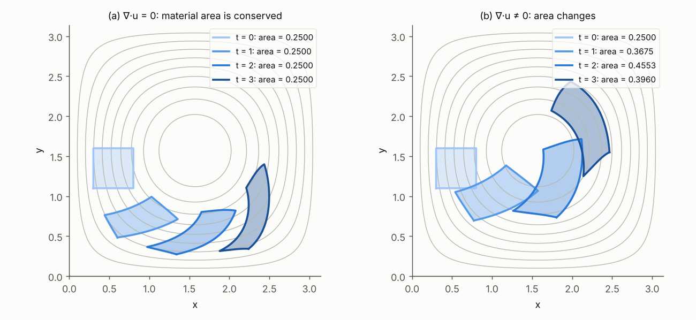

Fluid mechanics and turbulence
Preparation · level L2 → M1 · ≈ 25 h
Objectives
Starting from a second-year undergraduate (L2) level, this module builds all the fluid-mechanics vocabulary needed to read a paper on generative models of turbulent or magnetohydrodynamic fields. By the end of the roughly twenty-five hours of planned work, you should be able to:
- move from the Lagrangian to the Eulerian description of a flow, compute a material derivative, and prove the equivalence between \nabla\cdot\mathbf{u} = 0 and the conservation of material volumes;
- write and nondimensionalize the incompressible Navier–Stokes equations, explain why the pressure is the Lagrange multiplier of the constraint \nabla\cdot\mathbf{u} = 0, and compute the Leray projection of a periodic field;
- derive the vorticity equation in 2D and in 3D, identify the stretching term, and reconstruct a 2D velocity field from its stream function;
- prove the energy, enstrophy (2D) and helicity budgets, and deduce from them the equality “mean injection = mean dissipation” in a statistically stationary regime;
- check that a reference flow (Poiseuille, Taylor–Green, Kolmogorov, ABC) is an exact solution, and describe the geometry of the von Kármán flow used by the VKS experiment;
- recover by dimensional analysis the Kolmogorov spectrum E(k) \propto \varepsilon^{2/3} k^{-5/3}, the Kolmogorov scale and the number of degrees of freedom \propto Re^{9/4}, and explain the dual cascade of 2D turbulence;
- program a 2D pseudo-spectral vorticity–stream-function solver with dealiasing and an integrating factor, measure its spectrum, and numerically verify the mean energy budget.
Prerequisites
The starting point is an L2 level in mathematics: partial derivatives, multiple integrals and change of variables, linear differential equations, Fourier series of a periodic function. First-year point mechanics (Newton’s second law, kinetic energy) is enough on the physics side.
The module Vector calculus and Fourier analysis must be read before this one: the present module uses, without re-proving them, the formulas of vector analysis (\nabla\times\nabla\times = \nabla\nabla\cdot - \Delta, divergence theorem), the discrete Fourier transform and Parseval’s identity. The modules Dynamical systems and Probability and optimal transport are natural extensions of Chapter 6 (invariant measures, ergodicity); they are not needed to get started.
For the code, you need Python 3 with NumPy (and Matplotlib if you want to plot). Each block runs as is in under thirty seconds on an ordinary processor; the output obtained when the module was written is copied as a comment.
Work plan
The level indicates the difficulty: 1 = foundations, 2 = core of the subject, 3 = close to research. It never goes down from one session to the next.
| Session | Duration | Level | Content | Exercises |
|---|---|---|---|---|
| S1 | 3 h | 1 | Chapter 1: kinematics, material derivative, mass, incompressibility | 1, 2 |
| S2 | 3.5 h | 1 | Chapter 2: Navier–Stokes, pressure and Leray projection, boundary conditions, Reynolds | 3, 4, 5 |
| S3 | 3 h | 2 | Chapter 3: vorticity, stretching, stream function | 6, 7 |
| S4 | 3.5 h | 2 | Chapter 4: energy, enstrophy and helicity budgets, spectrum | 8, 9 |
| S5 | 3 h | 2 | Chapter 5: Poiseuille, Taylor–Green, Kolmogorov, ABC, von Kármán | 10, 11 |
| S6 | 4.5 h | 3 | Chapter 6: statistics, Kolmogorov 1941, 2D turbulence | 12, 13 |
| S7 | 4.5 h | 3 | Chapter 7: pseudo-spectral methods, 2D solver, numerical budget | 14, 15 |
| Total | 25 h | 15 exercises |
A word of advice on organization: run each code block while you read the corresponding chapter, then change a parameter (resolution, viscosity, amplitude) to see what changes. Session S7 assumes that sessions S1 to S6 have been mastered, because the solver reuses all the identities proved earlier.
The module contains four static figures (trajectories and area conservation, reference flows, cascades, solver results) and three interactive diagrams, which run directly in the browser: the advection of a blob of fluid (Chapter 1), the Kolmogorov scale and the cost of a direct simulation (Chapter 6), aliasing and the 2/3 rule (Chapter 7). Play with them while reading: they also support Exercises 1, 12 and 14.
1. Kinematics: describing a fluid in motion
A fluid is a continuous medium in which every “particle” moves; one can follow these particles (Lagrange’s point of view) or watch what passes through a fixed point in space (Euler’s point of view). The generative models of the internship produce Eulerian fields \mathbf{u}(\mathbf{x}) on a grid, but conservation laws are most naturally proved by following the particles: one must therefore be able to switch from one description to the other.
1.1 Two descriptions of the same motion
Definition 1.1 — Lagrangian and Eulerian descriptions Let \Omega \subset \mathbb{R}^d (d = 2 or 3) be the domain occupied by the fluid. The Lagrangian description is given by the flow map \mathbf{X}(\mathbf{a}, t): the position at time t of the particle that occupied the position \mathbf{a} at time 0. The Eulerian description is given by the velocity field \mathbf{u}(\mathbf{x}, t) at each fixed point \mathbf{x}. The two are related by the trajectory equation \frac{\partial \mathbf{X}}{\partial t}(\mathbf{a}, t) = \mathbf{u}\big(\mathbf{X}(\mathbf{a}, t), t\big), \qquad \mathbf{X}(\mathbf{a}, 0) = \mathbf{a}.
If \mathbf{u} is regular enough (of class C^1 in space) and tangent to the boundary \partial\Omega when there is one, the Cauchy–Lipschitz theorem and the differentiability of solutions with respect to the initial condition guarantee that \mathbf{a} \mapsto \mathbf{X}(\mathbf{a}, t) is, for each t, a diffeomorphism of \Omega onto itself. The streamlines at time t are the curves that are tangent at each point to \mathbf{u}(\cdot, t); they coincide with the trajectories when the flow is steady, but not in general.
Definition 1.2 — Material derivative For an Eulerian quantity f(\mathbf{x}, t) (scalar or vector), the material derivative is \frac{\mathrm{D} f}{\mathrm{D} t} = \frac{\partial f}{\partial t} + (\mathbf{u}\cdot\nabla) f, \qquad (\mathbf{u}\cdot\nabla) f = \sum_{j=1}^{d} u_j \frac{\partial f}{\partial x_j}. The first term is the local variation (at a fixed point), the second the variation due to transport by the flow (it is called the advection term).
Proposition 1.3 — Physical meaning of the material derivative The material derivative is the time derivative of f along the trajectory of a particle: \frac{\mathrm{d}}{\mathrm{d}t} f\big(\mathbf{X}(\mathbf{a}, t), t\big) = \frac{\mathrm{D} f}{\mathrm{D} t}\big(\mathbf{X}(\mathbf{a}, t), t\big). In particular, the acceleration of a fluid particle is \mathrm{D}\mathbf{u}/\mathrm{D}t = \partial_t \mathbf{u} + (\mathbf{u}\cdot\nabla)\mathbf{u}.
Proof. This is the chain rule: \frac{\mathrm{d}}{\mathrm{d}t} f(\mathbf{X}, t) = \partial_t f + \sum_j \partial_{x_j} f \, \partial_t X_j, and \partial_t X_j = u_j(\mathbf{X}, t) by Definition 1.1. For the acceleration, apply this result to f = \mathbf{u}, since \partial_t^2 \mathbf{X} = \frac{\mathrm{d}}{\mathrm{d}t}\mathbf{u}(\mathbf{X}, t). ∎
Example 1.4 — Solid-body rotation Consider \mathbf{u} = \Omega_0(-y, x) in the plane (we write \Omega_0 for the angular velocity, so as not to confuse it with the domain \Omega). The trajectories are circles traversed at angular velocity \Omega_0. The field is steady (\partial_t\mathbf{u} = 0), and yet the particles accelerate: (\mathbf{u}\cdot\nabla)\mathbf{u} = \Omega_0(-y)\,\partial_x\big(\Omega_0(-y, x)\big) + \Omega_0 x\,\partial_y\big(\Omega_0(-y, x)\big) = -\Omega_0^2 (x, y). We recover the centripetal acceleration of point mechanics, of magnitude \Omega_0^2 r and directed toward the center. The term (\mathbf{u}\cdot\nabla)\mathbf{u} is quadratic in \mathbf{u}: it is the only nonlinearity of the Navier–Stokes equations, and the origin of turbulence.
1.2 Jacobian, Reynolds transport and mass conservation
Let F_{ij} = \partial X_i/\partial a_j denote the Jacobian matrix of the flow map and J = \det F its determinant. A small volume \mathrm{d}\mathbf{a} around \mathbf{a} becomes, at time t, a volume J\,\mathrm{d}\mathbf{a}.
Theorem 1.5 — Euler’s formula for the Jacobian Along each trajectory, \frac{\partial J}{\partial t}(\mathbf{a}, t) = (\nabla\cdot\mathbf{u})\big(\mathbf{X}(\mathbf{a}, t), t\big)\, J(\mathbf{a}, t), \qquad J(\mathbf{a}, 0) = 1.
Proof. Differentiating the trajectory equation with respect to a_j gives \partial_t F = (\nabla\mathbf{u})\,F, where (\nabla\mathbf{u})_{ik} = \partial u_i/\partial x_k is evaluated at \mathbf{X}. Jacobi’s formula for the derivative of a determinant gives \partial_t \det F = \det F \, \mathrm{tr}(F^{-1}\partial_t F) = \det F\, \mathrm{tr}(F^{-1}\nabla\mathbf{u}\,F) = \det F \,\mathrm{tr}(\nabla\mathbf{u}), and \mathrm{tr}(\nabla\mathbf{u}) = \nabla\cdot\mathbf{u}. Since F(\mathbf{a}, 0) = I, we have J(\mathbf{a}, 0) = 1. ∎
Theorem 1.6 — Reynolds transport theorem Let V(t) = \mathbf{X}(V_0, t) be a material volume (always made up of the same particles) and f a smooth function. Then \frac{\mathrm{d}}{\mathrm{d}t}\int_{V(t)} f\,\mathrm{d}\mathbf{x} = \int_{V(t)} \left(\frac{\mathrm{D} f}{\mathrm{D} t} + f\,\nabla\cdot\mathbf{u}\right)\mathrm{d}\mathbf{x} = \int_{V(t)} \left(\frac{\partial f}{\partial t} + \nabla\cdot(f\mathbf{u})\right)\mathrm{d}\mathbf{x}.
Proof. By the change of variables \mathbf{x} = \mathbf{X}(\mathbf{a}, t), the integral equals \int_{V_0} f(\mathbf{X}(\mathbf{a}, t), t)\, J(\mathbf{a}, t)\,\mathrm{d}\mathbf{a}, over a domain that no longer depends on time. We differentiate under the integral sign: Proposition 1.3 gives the derivative of the first factor, Theorem 1.5 that of the second. Finally, we return to the variables \mathbf{x}. The second form follows from \mathrm{D}f/\mathrm{D}t + f\nabla\cdot\mathbf{u} = \partial_t f + \mathbf{u}\cdot\nabla f + f\nabla\cdot\mathbf{u} = \partial_t f + \nabla\cdot(f\mathbf{u}). ∎
Theorem 1.7 — Conservation of mass If the mass of every material volume is constant, the density \rho(\mathbf{x}, t) satisfies the continuity equation \frac{\partial \rho}{\partial t} + \nabla\cdot(\rho\,\mathbf{u}) = 0, \qquad \text{or equivalently} \qquad \frac{\mathrm{D}\rho}{\mathrm{D}t} = -\rho\,\nabla\cdot\mathbf{u}.
Proof. Apply Theorem 1.6 to f = \rho: 0 = \frac{\mathrm{d}}{\mathrm{d}t}\int_{V(t)}\rho\,\mathrm{d}\mathbf{x} = \int_{V(t)}(\partial_t\rho + \nabla\cdot(\rho\mathbf{u}))\,\mathrm{d}\mathbf{x} for every material volume. A continuous function whose integral vanishes over every ball is identically zero, hence the result. ∎
Definition 1.8 — Incompressible flow A flow is incompressible if the density of each particle remains constant, \mathrm{D}\rho/\mathrm{D}t = 0. By Theorem 1.7, this is equivalent (for \rho > 0) to \nabla\cdot\mathbf{u} = 0, and, by Theorem 1.5, to J \equiv 1: the flow map preserves volumes (areas in 2D). A divergence-free field is called solenoidal. Throughout the rest of the module, we further assume that \rho is uniform, and we take \rho = 1.
Remark 1.9 — When is the assumption reasonable? A liquid is never strictly incompressible, but acoustic waves propagate in it at a speed c much larger than the flow velocities U (in water, c is of the order of 1.5 km/s). The classical analysis (see Batchelor, 2000) shows that, for a steady flow, the relative density variations induced by the flow are of order Ma^2, where Ma = U/c is the Mach number; for an unsteady flow of typical frequency f, one also needs fL/c \ll 1. For U = 10 m/s in water, Ma^2 \approx 4\times 10^{-5}: the constraint \nabla\cdot\mathbf{u} = 0 is then an excellent approximation. The same holds for the liquid sodium of dynamo experiments.
Example 1.10 — Numerical check on a cellular flow The code below integrates the trajectories of the steady flow \mathbf{u} = (\sin x\cos y, -\cos x\sin y), which is divergence-free. It checks that the Jacobian of the flow map remains equal to 1 (up to the finite-difference error) and that the acceleration measured along a trajectory coincides with the Eulerian term (\mathbf{u}\cdot\nabla)\mathbf{u} = \tfrac12(\sin 2x, \sin 2y), computed by hand.
import numpy as np
# Steady cellular flow (2D Taylor–Green): u = (sin x cos y, -cos x sin y)
def u(p):
x, y = p[..., 0], p[..., 1]
return np.stack([np.sin(x) * np.cos(y), -np.cos(x) * np.sin(y)], axis=-1)
def flow_map(a, T, n=2000):
"""Integrates dX/dt = u(X), X(0) = a, with RK4 (Lagrangian description)."""
X, h = a.copy(), T / n
for _ in range(n):
k1 = u(X); k2 = u(X + h / 2 * k1); k3 = u(X + h / 2 * k2); k4 = u(X + h * k3)
X = X + h / 6 * (k1 + 2 * k2 + 2 * k3 + k4)
return X
# 1) Area conservation: J = det(∂X/∂a) must remain equal to 1 (since ∇·u = 0)
rng = np.random.default_rng(1)
a = rng.uniform(0, 2 * np.pi, size=(5, 2))
d = 1e-6
for T in (1.0, 5.0):
Xa = flow_map(a, T)
Jx = (flow_map(a + [d, 0], T) - flow_map(a - [d, 0], T)) / (2 * d) # ∂X/∂a1
Jy = (flow_map(a + [0, d], T) - flow_map(a - [0, d], T)) / (2 * d) # ∂X/∂a2
J = Jx[:, 0] * Jy[:, 1] - Jx[:, 1] * Jy[:, 0]
print(f"T = {T}: max |det(∂X/∂a) - 1| = {np.abs(J - 1).max():.1e}")
# 2) Material derivative: the acceleration d²X/dt² along a trajectory
# coincides with Du/Dt = ∂t u + (u·∇)u = (u·∇)u (steady flow)
p0 = np.array([[0.3, 1.1]])
h = 1e-3
Xm, X0, Xp = flow_map(p0, 1 - h, 400), flow_map(p0, 1.0, 400), flow_map(p0, 1 + h, 400)
acc_traj = (Xp - 2 * X0 + Xm) / h**2
x, y = X0[0]
acc_euler = np.array([0.5 * np.sin(2 * x), 0.5 * np.sin(2 * y)]) # (u·∇)u computed by hand
print("d²X/dt² (trajectory) =", np.round(acc_traj[0], 5))
print("(u·∇)u (Eulerian) =", np.round(acc_euler, 5))
# output:
# T = 1.0: max |det(∂X/∂a) - 1| = 8.9e-09
# T = 5.0: max |det(∂X/∂a) - 1| = 1.6e-08
# d²X/dt² (trajectory) = [0.46655 0.41195]
# (u·∇)u (Eulerian) = [0.46655 0.41195]
Key takeaways — chapter 1
- The Eulerian description \mathbf{u}(\mathbf{x}, t) and the Lagrangian description \mathbf{X}(\mathbf{a}, t) are related by \partial_t\mathbf{X} = \mathbf{u}(\mathbf{X}, t).
- The material derivative \mathrm{D}/\mathrm{D}t = \partial_t + \mathbf{u}\cdot\nabla is the derivative along trajectories; the acceleration \mathrm{D}\mathbf{u}/\mathrm{D}t contains the nonlinear term (\mathbf{u}\cdot\nabla)\mathbf{u}.
- The Jacobian of the flow map obeys \partial_t J = (\nabla\cdot\mathbf{u})J; hence the Reynolds transport theorem and the continuity equation \partial_t\rho + \nabla\cdot(\rho\mathbf{u}) = 0.
- Incompressibility: \nabla\cdot\mathbf{u} = 0 \Leftrightarrow J \equiv 1 \Leftrightarrow material volumes are conserved.
2. The incompressible Navier–Stokes equations
Kinematics tells how the fluid moves; dynamics tells why. We write Newton’s second law for each material volume, with a constitutive law that relates the internal stresses to the velocity gradients. The result, the Navier–Stokes equations, is the model satisfied by the internship’s training data (in its magnetohydrodynamic version, see the module MHD and the dynamo effect).
2.1 Momentum balance
Definition 2.1 — Stress tensor of a Newtonian fluid The force exerted across a small surface element with normal \mathbf{n} is \boldsymbol\sigma\,\mathbf{n}\,\mathrm{d}S, where \boldsymbol\sigma is the (symmetric) stress tensor. A fluid is Newtonian and incompressible if \boldsymbol\sigma = -p\,I + 2\mu\,\mathbf{S}, \qquad S_{ij} = \frac12\left(\frac{\partial u_i}{\partial x_j} + \frac{\partial u_j}{\partial x_i}\right), where p is the pressure, \mu the dynamic viscosity and \mathbf{S} the strain-rate tensor. We write \nu = \mu/\rho for the kinematic viscosity (in m²/s).
Theorem 2.2 — Incompressible Navier–Stokes equations For a Newtonian fluid of uniform density \rho = 1, subject to a body force \mathbf{f} (per unit mass), the velocity field and the pressure satisfy \frac{\partial\mathbf{u}}{\partial t} + (\mathbf{u}\cdot\nabla)\mathbf{u} = -\nabla p + \nu\,\Delta\mathbf{u} + \mathbf{f}, \qquad \nabla\cdot\mathbf{u} = 0.
Proof. Sketch. For a material volume V(t), the rate of change of momentum equals the sum of the forces: \frac{\mathrm{d}}{\mathrm{d}t}\int_{V}\rho\mathbf{u} = \int_{\partial V}\boldsymbol\sigma\mathbf{n}\,\mathrm{d}S + \int_V\rho\mathbf{f}. Theorem 1.6 (applied component by component, together with mass conservation) turns the left-hand side into \int_V \rho\,\mathrm{D}\mathbf{u}/\mathrm{D}t; the divergence theorem turns the surface integral into \int_V \nabla\cdot\boldsymbol\sigma. Since the volume is arbitrary, \rho\,\mathrm{D}\mathbf{u}/\mathrm{D}t = \nabla\cdot\boldsymbol\sigma + \rho\mathbf{f} (Cauchy’s equation). With the Newtonian law, (\nabla\cdot\boldsymbol\sigma)_i = -\partial_i p + \mu\sum_j\partial_j(\partial_j u_i + \partial_i u_j) = -\partial_i p + \mu\Delta u_i + \mu\,\partial_i(\nabla\cdot\mathbf{u}), and the last term vanishes. Finally, we divide by \rho = 1. ∎
There are d + 1 unknowns (\mathbf{u} and p) for d + 1 equations. But the pressure has no evolution equation of its own: it appears only through its gradient, and it is entirely determined by the incompressibility constraint. This is the point that matters directly for generating fields under constraints.
2.2 Pressure, the Lagrange multiplier of the incompressibility constraint
Proposition 2.3 — Poisson equation for the pressure If (\mathbf{u}, p) is a smooth solution, then at each time -\Delta p = \nabla\cdot\big((\mathbf{u}\cdot\nabla)\mathbf{u}\big) - \nabla\cdot\mathbf{f} = \sum_{i,j}\frac{\partial u_j}{\partial x_i}\frac{\partial u_i}{\partial x_j} - \nabla\cdot\mathbf{f}.
Proof. Take the divergence of the momentum equation. The terms \partial_t(\nabla\cdot\mathbf{u}) and \nu\Delta(\nabla\cdot\mathbf{u}) vanish. For the nonlinear term, \partial_i(u_j\partial_j u_i) = \partial_i u_j\,\partial_j u_i + u_j\partial_j(\partial_i u_i), and the second piece vanishes. ∎
The pressure is therefore not independent data: for a given \mathbf{u}, it is the solution of an elliptic, instantaneous and nonlocal problem. A velocity perturbation at one point changes the pressure everywhere. The following theorem gives the geometric interpretation of this fact.
Theorem 2.4 — Leray projection; pressure as a Lagrange multiplier On the torus \mathbb{T}^d = [0, 2\pi)^d (periodic domain), every square-integrable field \mathbf{v} decomposes uniquely as \mathbf{v} = \mathbf{w} + \nabla q, \qquad \nabla\cdot\mathbf{w} = 0, (q being defined up to a constant), and the two terms are orthogonal in L^2. The map \mathbb{P}:\mathbf{v}\mapsto\mathbf{w} is the Leray projection; it achieves the minimum of \tfrac12\|\mathbf{w} - \mathbf{v}\|^2 under the constraint \nabla\cdot\mathbf{w} = 0, and q is the associated Lagrange multiplier. In Fourier space, for \mathbf{k}\neq 0, \widehat{\mathbb{P}\mathbf{v}}(\mathbf{k}) = \left(I - \frac{\mathbf{k}\mathbf{k}^{\mathsf T}}{|\mathbf{k}|^2}\right)\hat{\mathbf{v}}(\mathbf{k}), and \widehat{\mathbb{P}\mathbf{v}}(\mathbf{0}) = \hat{\mathbf{v}}(\mathbf{0}): the mean of \mathbf{v}, which is a constant and therefore solenoidal field, is preserved in full. The Navier–Stokes equations can then be written without the pressure: \partial_t\mathbf{u} = \mathbb{P}\big[-(\mathbf{u}\cdot\nabla)\mathbf{u} + \nu\Delta\mathbf{u} + \mathbf{f}\big].
Proof. Lagrangian. Introduce \mathcal{L}(\mathbf{w}, q) = \tfrac12\|\mathbf{w} - \mathbf{v}\|^2 + \langle q, \nabla\cdot\mathbf{w}\rangle, where \langle\cdot,\cdot\rangle is the L^2 inner product. Integrating by parts on the torus (no boundary), \langle q, \nabla\cdot\mathbf{w}\rangle = -\langle\nabla q, \mathbf{w}\rangle. Stationarity with respect to \mathbf{w} gives \mathbf{w} - \mathbf{v} - \nabla q = 0, hence \mathbf{v} = \mathbf{w} - \nabla q; after replacing q by -q, this is the stated decomposition. Stationarity with respect to q gives back the constraint \nabla\cdot\mathbf{w} = 0. Taking the divergence, q solves \Delta q = \nabla\cdot\mathbf{v}.
Fourier. With \hat{\mathbf{v}} = \hat{\mathbf{w}} + \mathrm{i}\mathbf{k}\hat q and \mathbf{k}\cdot\hat{\mathbf{w}} = 0, we find \mathrm{i}|\mathbf{k}|^2\hat q = \mathbf{k}\cdot\hat{\mathbf{v}}, hence \hat{\mathbf{w}} = \hat{\mathbf{v}} - \mathbf{k}(\mathbf{k}\cdot\hat{\mathbf{v}})/|\mathbf{k}|^2. The matrix I - \mathbf{k}\mathbf{k}^{\mathsf T}/|\mathbf{k}|^2 is symmetric and idempotent: it is an orthogonal projector, mode by mode, which proves uniqueness, orthogonality (by Parseval) and the minimum property (Pythagoras).
Navier–Stokes. Apply \mathbb{P} to the momentum equation: \mathbb{P}\partial_t\mathbf{u} = \partial_t\mathbf{u} because \mathbf{u} is solenoidal, and \mathbb{P}\nabla p = 0. The pressure is exactly the gradient part that must be removed for the evolution to remain in the space of solenoidal fields. ∎
Remark 2.5 — Two readings of this theorem Arnold (1966) showed that the Euler equations (\nu = 0) describe the geodesics of the group of volume-preserving diffeomorphisms: the pressure is the constraint force that keeps the motion on this group, exactly as the tension of a string keeps a pendulum on its circle. On the numerical side, Chorin (1968) founded the projection method: one first advances the velocity without the constraint, then projects it onto the solenoidal fields. The “final projection” and the “projected flow” compared in experiment E2 of the report are the direct transposition of this idea to generative models.
2.3 Boundary conditions
Definition 2.6 — Usual boundary conditions - No-slip (solid wall moving at velocity \mathbf{U}_p): \mathbf{u} = \mathbf{U}_p on \partial\Omega. This is the natural condition for a viscous fluid: the fluid sticks to the wall. - Impermeability alone: \mathbf{u}\cdot\mathbf{n} = 0 on \partial\Omega. It is the only condition that can be imposed for an ideal fluid (\nu = 0), because the Euler equation is first order in space. - Periodicity: \Omega = [0, L)^d and all fields are L-periodic in each direction. There is no boundary; this is the setting of spectral methods (Chapter 7) and of many training datasets (Kolmogorov flow, homogeneous turbulence).
Proposition 2.7 — Mean velocity in a periodic domain On the torus, the mean velocity \langle\mathbf{u}\rangle satisfies \frac{\mathrm{d}}{\mathrm{d}t}\langle\mathbf{u}\rangle = \langle\mathbf{f}\rangle. If the force has zero mean, the mean velocity is therefore constant: it remains zero if it is zero initially, and we assume this to be the case throughout. (Without forcing, one can also reduce to this case by a Galilean change of reference frame; with a force fixed in space, such as Kolmogorov’s, this change would make the force time-dependent, and zero mean is then an assumption on the initial condition.)
Proof. Average the momentum equation. The mean of a derivative of a periodic function is zero, so \langle\nabla p\rangle = 0 and \langle\Delta\mathbf{u}\rangle = 0; moreover (\mathbf{u}\cdot\nabla)\mathbf{u} = \nabla\cdot(\mathbf{u}\otimes\mathbf{u}) since \nabla\cdot\mathbf{u} = 0, and its mean vanishes as well. ∎
2.4 Nondimensionalization and the Reynolds number
Definition 2.8 — Reynolds number Let U be a characteristic velocity and L a characteristic length. We set \mathbf{x} = L\mathbf{x}^*, \mathbf{u} = U\mathbf{u}^*, t = (L/U)t^*, p = U^2p^* and \mathbf{f} = (U^2/L)\mathbf{f}^*. Dropping the stars, the equations become \frac{\partial\mathbf{u}}{\partial t} + (\mathbf{u}\cdot\nabla)\mathbf{u} = -\nabla p + \frac{1}{Re}\Delta\mathbf{u} + \mathbf{f}, \qquad \nabla\cdot\mathbf{u} = 0, \qquad Re = \frac{UL}{\nu}. The Reynolds number Re compares the order of magnitude of the inertial term, U^2/L, with that of the viscous term, \nu U/L^2. It is also the ratio of the viscous diffusion time L^2/\nu to the advection time L/U.
Proposition 2.9 — Dynamic similarity Two flows in similar geometries, with similar forcings and boundary conditions, have identical nondimensional solutions as soon as they have the same Reynolds number.
Proof. After nondimensionalization, the complete problem (equations, domain, boundary conditions, forcing) depends only on Re; two problems with the same Re are therefore the same mathematical problem. ∎
This property is what justifies scale models in wind tunnels, and it is what makes Re (together with Rm and Pm for MHD) the natural conditioning parameter \boldsymbol\lambda of the internship’s generative models: generating “a field at a given Re” has a meaning that does not depend on the chosen units. Beware, however: the precise definition of U and L is a convention, and two papers may report the same flow with different values of Re (we will see this in Chapter 5 with the Kolmogorov flow).
Example 2.10 — Orders of magnitude With \nu \approx 10^{-6} m²/s for water: the slow flow of water in a capillary tube (U = 1 mm/s, L = 1 mm) gives Re \approx 1; a river (U = 1 m/s, L = 10 m) gives Re \approx 10^7. In the VKS liquid-sodium dynamo experiment, Monchaux et al. (2007) define Re = KR^2\Omega_0/\nu (with R the radius of the vessel, \Omega_0 the angular velocity of the impellers, written as in Example 1.4 so as not to confuse it with the domain \Omega, and an efficiency coefficient K = 0.6) and state that Re can reach 5\times 10^6, the magnetic Reynolds number then reaching up to 49 (sodium at 120 °C). The flow is fully turbulent.
Example 2.11 — Leray projection and Taylor–Green pressure, numerically The following code projects a smooth random field onto the solenoidal fields and checks that the projection is idempotent and orthogonal and that it gives the closest solenoidal field; it then solves the Poisson equation (Proposition 2.3) for the Taylor–Green vortex and compares the result with the exact pressure p = \tfrac14(\cos 2x + \cos 2y) (Exercise 5). We zero out the Nyquist mode k = -N/2, for which the spectral derivative cannot be defined in a real-valued way (Chapter 7).
import numpy as np
N = 32
x = np.arange(N) * 2 * np.pi / N
X, Y = np.meshgrid(x, x, indexing="xy")
k = np.fft.fftfreq(N, 1.0 / N)
KX, KY = np.meshgrid(k, k)
K2 = KX**2 + KY**2
K2s = np.where(K2 > 0, K2, 1.0)
def div(vx, vy):
return np.real(np.fft.ifft2(1j * KX * np.fft.fft2(vx) + 1j * KY * np.fft.fft2(vy)))
def leray(vx, vy):
"""P v = v - ∇p with Δp = ∇·v: in Fourier space, P̂(k) = I - k kᵀ/|k|²."""
fx, fy = np.fft.fft2(vx), np.fft.fft2(vy)
kv = (KX * fx + KY * fy) / K2s
return np.real(np.fft.ifft2(fx - KX * kv)), np.real(np.fft.ifft2(fy - KY * kv))
# 1) Projection of a smooth random field
rng = np.random.default_rng(0)
filt = np.exp(-K2 / 20) * (np.abs(KX) < N // 2) * (np.abs(KY) < N // 2) # Nyquist mode removed
vx = np.real(np.fft.ifft2(np.fft.fft2(rng.standard_normal((N, N))) * filt))
vy = np.real(np.fft.ifft2(np.fft.fft2(rng.standard_normal((N, N))) * filt))
wx, wy = leray(vx, vy)
wx2, wy2 = leray(wx, wy)
ip = lambda ax, ay, bx, by: np.mean(ax * bx + ay * by) # normalized L² inner product
print(f"max|∇·v| = {np.abs(div(vx, vy)).max():.2e} max|∇·Pv| = {np.abs(div(wx, wy)).max():.1e}")
print(f"idempotence max|P²v - Pv| = {max(np.abs(wx2 - wx).max(), np.abs(wy2 - wy).max()):.1e}")
print(f"orthogonality <Pv, v - Pv> = {ip(wx, wy, vx - wx, vy - wy):.1e}")
# Pv is the solenoidal field closest to v: compare with other solenoidal fields
dist = ip(vx - wx, vy - wy, vx - wx, vy - wy)
zx, zy = leray(*[np.real(np.fft.ifft2(np.fft.fft2(rng.standard_normal((N, N))) * filt)) for _ in range(2)])
print(f"||v-Pv||² = {dist:.4f} < ||v-(Pv+z)||² = {ip(vx-wx-zx, vy-wy-zy, vx-wx-zx, vy-wy-zy):.4f}")
# 2) Pressure of the Taylor–Green vortex: -Δp = ∂i u_j ∂j u_i, compared with (cos 2x + cos 2y)/4
ux, uy = np.sin(X) * np.cos(Y), -np.cos(X) * np.sin(Y)
d = lambda f, K: np.real(np.fft.ifft2(1j * K * np.fft.fft2(f)))
src = d(ux, KX)**2 + 2 * d(uy, KX) * d(ux, KY) + d(uy, KY)**2
p = np.real(np.fft.ifft2(np.fft.fft2(src) / K2s * (K2 > 0)))
p_exact = 0.25 * (np.cos(2 * X) + np.cos(2 * Y))
print(f"max|p - p_exact| = {np.abs(p - p_exact).max():.1e}")
# output:
# max|∇·v| = 2.07e+00 max|∇·Pv| = 8.7e-16
# idempotence max|P²v - Pv| = 1.1e-16
# orthogonality <Pv, v - Pv> = -1.4e-18
# ||v-Pv||² = 0.0360 < ||v-(Pv+z)||² = 0.0772
# max|p - p_exact| = 3.3e-16Key takeaways — chapter 2
- Incompressible Navier–Stokes: \partial_t\mathbf{u} + (\mathbf{u}\cdot\nabla)\mathbf{u} = -\nabla p + \nu\Delta\mathbf{u} + \mathbf{f}, \nabla\cdot\mathbf{u} = 0.
- The pressure has no evolution equation: it solves -\Delta p = \partial_i u_j\partial_j u_i - \nabla\cdot\mathbf{f} and plays the role of Lagrange multiplier of the constraint \nabla\cdot\mathbf{u} = 0.
- Leray projection in Fourier space: \hat{\mathbf{w}} = (I - \mathbf{k}\mathbf{k}^{\mathsf T}/|\mathbf{k}|^2)\hat{\mathbf{v}}; it is the solenoidal field closest to \mathbf{v} in the L^2 sense.
- Boundary conditions: no-slip (viscous), impermeability (ideal), periodicity (torus, spectral methods).
- Re = UL/\nu = inertia / viscosity; two similar flows with the same Re are identical after nondimensionalization.
3. Vorticity and stream function
The pressure makes the Navier–Stokes equation nonlocal. Taking the curl eliminates it and yields an evolution equation for the vorticity, which measures the local rotation of the fluid. In 2D, this equation becomes a simple transport–diffusion equation for a scalar; this is the form used by the solver of Chapter 7 and by most 2D datasets (Kolmogorov flow).
3.1 Definitions and Lamb form
Definition 3.1 — Vorticity The vorticity is the curl of the velocity, \boldsymbol\omega = \nabla\times\mathbf{u}. For a plane flow \mathbf{u} = (u_x(x, y), u_y(x, y), 0), it is directed along \mathbf{e}_z, and we write \omega = \partial_x u_y - \partial_y u_x for its scalar component. A field is irrotational if \boldsymbol\omega = 0. By construction, \nabla\cdot\boldsymbol\omega = 0.
Example 3.2 — Solid-body rotation and shear For the solid-body rotation \mathbf{u} = \Omega_0(-y, x) of Example 1.4, we find \omega = 2\Omega_0: the vorticity is twice the local angular velocity. For the simple shear \mathbf{u} = (\gamma y, 0), we find \omega = -\gamma, even though the trajectories are straight lines: the vorticity measures the rotation of a small fluid element about itself, not the curvature of the trajectories.
Proposition 3.3 — Lamb form of the nonlinear term For any smooth field \mathbf{u} in 3D, (\mathbf{u}\cdot\nabla)\mathbf{u} = \nabla\left(\frac{|\mathbf{u}|^2}{2}\right) - \mathbf{u}\times\boldsymbol\omega.
Proof. In index notation, with the Levi-Civita symbol, (\mathbf{u}\times\boldsymbol\omega)_i = \epsilon_{ijk}u_j\epsilon_{klm}\partial_l u_m. The identity \epsilon_{ijk}\epsilon_{klm} = \delta_{il}\delta_{jm} - \delta_{im}\delta_{jl} gives (\mathbf{u}\times\boldsymbol\omega)_i = u_j\partial_i u_j - u_j\partial_j u_i = \partial_i(|\mathbf{u}|^2/2) - (\mathbf{u}\cdot\nabla)u_i. ∎
3.2 The vorticity equation: stretching
Theorem 3.4 — Vorticity equation in 3D If \mathbf{u} is a solution of the incompressible Navier–Stokes equations, then \frac{\partial\boldsymbol\omega}{\partial t} + (\mathbf{u}\cdot\nabla)\boldsymbol\omega = (\boldsymbol\omega\cdot\nabla)\mathbf{u} + \nu\Delta\boldsymbol\omega + \nabla\times\mathbf{f}.
Proof. With Proposition 3.3, the momentum equation reads \partial_t\mathbf{u} - \mathbf{u}\times\boldsymbol\omega = -\nabla(p + |\mathbf{u}|^2/2) + \nu\Delta\mathbf{u} + \mathbf{f}. Taking the curl, the gradient disappears, and the identity \nabla\times(\mathbf{u}\times\boldsymbol\omega) = (\boldsymbol\omega\cdot\nabla)\mathbf{u} - (\mathbf{u}\cdot\nabla)\boldsymbol\omega + \mathbf{u}(\nabla\cdot\boldsymbol\omega) - \boldsymbol\omega(\nabla\cdot\mathbf{u}), in which both divergences vanish, gives the result. The curl commutes with \Delta and \partial_t. ∎
The term (\boldsymbol\omega\cdot\nabla)\mathbf{u} is the vortex-stretching term. It has no counterpart in 2D and lies at the heart of three-dimensional turbulence: a vortex tube stretched by the flow becomes thinner and spins faster, like a figure skater pulling in her arms.
Proposition 3.5 — Only the strain rate stretches We have (\boldsymbol\omega\cdot\nabla)\mathbf{u} = \mathbf{S}\boldsymbol\omega, where \mathbf{S} is the strain-rate tensor. Consequently, for \nu = 0 and \mathbf{f} = 0, \frac{\mathrm{D}}{\mathrm{D}t}\left(\frac{|\boldsymbol\omega|^2}{2}\right) = \boldsymbol\omega\cdot\mathbf{S}\boldsymbol\omega, which is positive when \boldsymbol\omega is aligned with an eigendirection of \mathbf{S} with a positive eigenvalue (stretching direction).
Proof. Decompose \nabla\mathbf{u} = \mathbf{S} + \mathbf{A} into its symmetric and antisymmetric parts. The antisymmetric part acts as \mathbf{A}\mathbf{v} = \tfrac12\boldsymbol\omega\times\mathbf{v}; hence \mathbf{A}\boldsymbol\omega = \tfrac12\boldsymbol\omega\times\boldsymbol\omega = 0 and (\boldsymbol\omega\cdot\nabla)\mathbf{u} = (\nabla\mathbf{u})\boldsymbol\omega = \mathbf{S}\boldsymbol\omega. Then take the dot product of the vorticity equation with \boldsymbol\omega. ∎
Theorem 3.6 — Vorticity in 2D For a plane flow, (\boldsymbol\omega\cdot\nabla)\mathbf{u} = 0 and the scalar vorticity obeys \frac{\partial\omega}{\partial t} + \mathbf{u}\cdot\nabla\omega = \nu\Delta\omega + (\nabla\times\mathbf{f})_z. In the absence of viscosity and forcing, \omega is simply transported by the flow: for every function G of class C^1, the quantity \langle G(\omega)\rangle is conserved on the torus.
Proof. \boldsymbol\omega = \omega\mathbf{e}_z and \mathbf{u} does not depend on z, so (\boldsymbol\omega\cdot\nabla)\mathbf{u} = \omega\,\partial_z\mathbf{u} = 0. For the conservation, \frac{\mathrm{d}}{\mathrm{d}t}\langle G(\omega)\rangle = -\langle G'(\omega)\,\mathbf{u}\cdot\nabla\omega\rangle = -\langle\mathbf{u}\cdot\nabla G(\omega)\rangle = \langle(\nabla\cdot\mathbf{u})G(\omega)\rangle = 0, by integration by parts on the torus. ∎
In 2D, there is therefore an infinite number of quantities conserved by the ideal dynamics, among them the enstrophy \tfrac12\langle\omega^2\rangle (G(\omega) = \omega^2/2). This is the deep reason for the difference between 2D and 3D turbulence (Chapter 6).
3.3 Stream function
Definition 3.7 — Stream function For a plane flow, a stream function is a function \psi(x, y, t) such that \mathbf{u} = \nabla^\perp\psi = \left(\frac{\partial\psi}{\partial y}, -\frac{\partial\psi}{\partial x}\right). This is the convention used throughout the site (see the common notation). Such a field is automatically solenoidal: \nabla\cdot\nabla^\perp\psi = \partial_x\partial_y\psi - \partial_y\partial_x\psi = 0.
Proposition 3.8 — Properties of the stream function (i) The streamlines are the level curves of \psi. (ii) The vorticity is \omega = -\Delta\psi. (iii) On the torus \mathbb{T}^2, every solenoidal field with zero mean can be written \mathbf{u} = \nabla^\perp\psi for a unique \psi with zero mean, given in Fourier space by \hat\psi(\mathbf{k}) = \frac{\hat\omega(\mathbf{k})}{|\mathbf{k}|^2}, \qquad \mathbf{k}\neq 0.
Proof.
- \mathbf{u}\cdot\nabla\psi = \partial_y\psi\,\partial_x\psi - \partial_x\psi\,\partial_y\psi = 0: \psi is constant along \mathbf{u}. (ii) \omega = \partial_x u_y - \partial_y u_x = -\partial_x^2\psi - \partial_y^2\psi. (iii) In Fourier space, \mathbf{k}\cdot\hat{\mathbf{u}} = 0 forces \hat{\mathbf{u}}(\mathbf{k}) to be collinear with (k_y, -k_x): \hat{\mathbf{u}} = \mathrm{i}(k_y, -k_x)\hat\psi for a unique \hat\psi(\mathbf{k}), which is exactly \mathbf{u} = \nabla^\perp\psi. The relation \omega = -\Delta\psi becomes \hat\omega = |\mathbf{k}|^2\hat\psi. ∎
Point (iii) is the 2D version of a fact that will be used throughout the internship: parameterizing a field by a potential guarantees the divergence constraint by construction. This is the “potentials” mechanism of experiment E2 of the report, and that of FunDiff (Wang et al., 2026), whose decoder outputs a stream function for the Kolmogorov flow. In 3D, the role of \psi is played by a vector potential \boldsymbol\Psi, with \mathbf{u} = \nabla\times\boldsymbol\Psi; for the magnetic field, this potential is denoted \mathbf{A} (\mathbf{B} = \nabla\times\mathbf{A}, see the common notation).
Example 3.9 — 2D Taylor–Green vortices Take \psi = \sin x\sin y on [0, 2\pi)^2. Then \mathbf{u} = (\sin x\cos y, -\cos x\sin y) and \omega = -\Delta\psi = 2\sin x\sin y = 2\psi. The domain is tiled by four vortex cells of alternating signs. Since \omega is a function of \psi, the advection term \mathbf{u}\cdot\nabla\omega = 2\,\mathbf{u}\cdot\nabla\psi vanishes: this field is a steady solution of the 2D Euler equations.
Theorem 3.10 — Kelvin’s theorem For an ideal fluid (\nu = 0) subject to a force that derives from a potential, the circulation \Gamma(t) = \oint_{C(t)}\mathbf{u}\cdot\mathrm{d}\boldsymbol\ell along any closed material curve C(t) is constant.
Proof. Sketch. Parameterize C(t) = \mathbf{X}(\mathbf{a}(s), t), s \in [0, 1]. Then \frac{\mathrm{d}\Gamma}{\mathrm{d}t} = \oint \frac{\mathrm{D}\mathbf{u}}{\mathrm{D}t}\cdot\mathrm{d}\boldsymbol\ell + \oint\mathbf{u}\cdot\mathrm{d}\mathbf{u}. The first term is the integral of a gradient along a closed curve, hence zero; the second equals \oint\mathrm{d}(|\mathbf{u}|^2/2) = 0. ∎
By Stokes’ theorem, \Gamma is the flux of vorticity through the surface bounded by C: in an ideal fluid, vortex lines are “frozen” into the flow. The module MHD and the dynamo effect will show that magnetic field lines obey an exactly analogous law (Alfvén’s theorem), which explains why vortex stretching and the amplification of the magnetic field by the dynamo effect look so much alike.
Example 3.11 — Vorticity and stretching, numerically The code below checks \omega = -\Delta\psi = 2\psi and \mathbf{u}\cdot\nabla\omega = 0 for 2D Taylor–Green, reconstructs \psi from \omega with the spectral formula, then computes the stretching term for the 3D Taylor–Green initial condition, \mathbf{u} = (\sin x\cos y\cos z, -\cos x\sin y\cos z, 0). In 3D, the local stretching is not zero; its mean \langle\boldsymbol\omega\cdot\mathbf{S}\boldsymbol\omega\rangle vanishes at t = 0 by symmetry, but it becomes positive afterwards, and the enstrophy grows (Brachet et al., 1983).
import numpy as np
N = 32
x = np.arange(N) * 2 * np.pi / N
k = np.fft.fftfreq(N, 1.0 / N)
# ---------- 2D: stream function, vorticity, nonlinear term ----------
X, Y = np.meshgrid(x, x, indexing="xy")
KX, KY = np.meshgrid(k, k)
K2 = KX**2 + KY**2
dx = lambda f: np.real(np.fft.ifft2(1j * KX * np.fft.fft2(f)))
dy = lambda f: np.real(np.fft.ifft2(1j * KY * np.fft.fft2(f)))
psi = np.sin(X) * np.sin(Y) # 2D Taylor–Green
ux, uy = dy(psi), -dx(psi) # u = ∇⊥ψ = (∂yψ, -∂xψ)
w = dx(uy) - dy(ux) # ω = ∂x u_y - ∂y u_x
lap_psi = np.real(np.fft.ifft2(-K2 * np.fft.fft2(psi)))
print(f"max|ω + Δψ| = {np.abs(w + lap_psi).max():.1e} max|ω - 2ψ| = {np.abs(w - 2*psi).max():.1e}")
print(f"max|u·∇ω| (2D Taylor–Green) = {np.abs(ux*dx(w) + uy*dy(w)).max():.1e}")
print(f"max|u·∇ψ| (streamlines = contour lines of ψ) = {np.abs(ux*dx(psi) + uy*dy(psi)).max():.1e}")
# Arbitrary 2D field: recover ψ from ω with ψ̂ = ω̂/|k|²
rng = np.random.default_rng(2)
psi_r = np.real(np.fft.ifft2(np.fft.fft2(rng.standard_normal((N, N))) * np.exp(-K2 / 10)))
psi_r -= psi_r.mean()
w_r = np.real(np.fft.ifft2(K2 * np.fft.fft2(psi_r))) # ω = -Δψ
psi_back = np.real(np.fft.ifft2(np.fft.fft2(w_r) / np.where(K2 > 0, K2, 1) * (K2 > 0)))
print(f"inversion ω → ψ: max|ψ - ψ_reconstructed| = {np.abs(psi_r - psi_back).max():.1e}")
# ---------- 3D: stretching term (ω·∇)u for 3D Taylor–Green ----------
X3, Y3, Z3 = np.meshgrid(x, x, x, indexing="ij")
K = np.meshgrid(k, k, k, indexing="ij")
D = lambda f, i: np.real(np.fft.ifftn(1j * K[i] * np.fft.fftn(f)))
u3 = [np.sin(X3) * np.cos(Y3) * np.cos(Z3), -np.cos(X3) * np.sin(Y3) * np.cos(Z3), 0 * X3]
w3 = [D(u3[2], 1) - D(u3[1], 2), D(u3[0], 2) - D(u3[2], 0), D(u3[1], 0) - D(u3[0], 1)]
stretch = [sum(w3[j] * D(u3[i], j) for j in range(3)) for i in range(3)]
rms = lambda f: np.sqrt(np.mean(sum(c**2 for c in f)))
print(f"3D Taylor–Green: rms(ω) = {rms(w3):.4f}, rms((ω·∇)u) = {rms(stretch):.4f}")
print(f"enstrophy production <ω·(ω·∇)u> = {np.mean(sum(w3[i]*stretch[i] for i in range(3))):.2e} at t = 0")
# output:
# max|ω + Δψ| = 9.3e-15 max|ω - 2ψ| = 6.7e-14
# max|u·∇ω| (2D Taylor–Green) = 3.6e-13
# max|u·∇ψ| (streamlines = contour lines of ψ) = 0.0e+00
# inversion ω → ψ: max|ψ - ψ_reconstructed| = 1.1e-16
# 3D Taylor–Green: rms(ω) = 0.8660, rms((ω·∇)u) = 0.1768
# enstrophy production <ω·(ω·∇)u> = 1.80e-20 at t = 0Key takeaways — chapter 3
- \boldsymbol\omega = \nabla\times\mathbf{u}; Lamb form: (\mathbf{u}\cdot\nabla)\mathbf{u} = \nabla(|\mathbf{u}|^2/2) - \mathbf{u}\times\boldsymbol\omega.
- 3D: \partial_t\boldsymbol\omega + (\mathbf{u}\cdot\nabla)\boldsymbol\omega = (\boldsymbol\omega\cdot\nabla)\mathbf{u} + \nu\Delta\boldsymbol\omega + \nabla\times\mathbf{f}; the stretching term (\boldsymbol\omega\cdot\nabla)\mathbf{u} = \mathbf{S}\boldsymbol\omega amplifies the vorticity.
- 2D: no stretching, \omega is transported and diffused; all the quantities \langle G(\omega)\rangle are conserved by the ideal dynamics.
- Stream function: \mathbf{u} = \nabla^\perp\psi = (\partial_y\psi, -\partial_x\psi), \omega = -\Delta\psi, \hat\psi = \hat\omega/|\mathbf{k}|^2; zero divergence is guaranteed by construction.
- Kelvin: in an ideal fluid, the circulation along a material curve is conserved.
4. Budgets: energy, enstrophy, helicity
A turbulent field is unpredictable in detail, but some global quantities obey exact budgets. These budgets are the first “physical constraints” that a generated field must satisfy, either snapshot by snapshot (divergence) or on average (energy). We work on the torus \mathbb{T}^d, with the spatial mean \langle f\rangle = |\Omega|^{-1}\int_\Omega f\,\mathrm{d}\mathbf{x}.
Definition 4.1 — Quadratic quantities The quantities
E = \frac12\langle|\mathbf{u}|^2\rangle, \qquad H_K = \langle\mathbf{u}\cdot\boldsymbol\omega\rangle, \qquad P = \langle\mathbf{f}\cdot\mathbf{u}\rangle, \qquad \varepsilon = \nu\langle|\boldsymbol\omega|^2\rangle
are called the kinetic energy (per unit mass), the kinetic helicity, the injected power of the forcing and the viscous dissipation rate. In 2D, the quantity Z = \tfrac12\langle\omega^2\rangle is called the enstrophy (some authors omit the factor \tfrac12; this is the case for the repository’s code experiences/mhd2d.py, where “enstrophy” refers to \langle\omega^2\rangle).
Lemma 4.2 — Gradient and vorticity For a periodic solenoidal field, \langle|\nabla\mathbf{u}|^2\rangle = \langle|\boldsymbol\omega|^2\rangle, where |\nabla\mathbf{u}|^2 = \sum_{i,j}(\partial_j u_i)^2.
Proof. The identity \epsilon_{kij}\epsilon_{klm} = \delta_{il}\delta_{jm} - \delta_{im}\delta_{jl} gives, pointwise, |\boldsymbol\omega|^2 = |\nabla\mathbf{u}|^2 - \partial_j u_i\,\partial_i u_j. Now, by an integration by parts in x_j, \langle\partial_j u_i\,\partial_i u_j\rangle = -\langle u_i\,\partial_j\partial_i u_j\rangle = -\langle u_i\,\partial_i(\nabla\cdot\mathbf{u})\rangle = 0. ∎
Theorem 4.3 — Energy budget For every smooth solution of the Navier–Stokes equations on the torus, \frac{\mathrm{d}E}{\mathrm{d}t} = P - \varepsilon = \langle\mathbf{f}\cdot\mathbf{u}\rangle - \nu\langle|\boldsymbol\omega|^2\rangle.
Proof. Take the dot product of the momentum equation with \mathbf{u} and average.
- Nonlinear term: \langle\mathbf{u}\cdot(\mathbf{u}\cdot\nabla)\mathbf{u}\rangle = \langle\mathbf{u}\cdot\nabla(|\mathbf{u}|^2/2)\rangle = -\langle(\nabla\cdot\mathbf{u})|\mathbf{u}|^2/2\rangle = 0. Transport neither creates nor destroys energy: it redistributes it.
- Pressure: \langle\mathbf{u}\cdot\nabla p\rangle = -\langle p\,\nabla\cdot\mathbf{u}\rangle = 0. The pressure does no work.
- Viscosity: \nu\langle\mathbf{u}\cdot\Delta\mathbf{u}\rangle = -\nu\langle|\nabla\mathbf{u}|^2\rangle = -\nu\langle|\boldsymbol\omega|^2\rangle by Lemma 4.2.
What remains is \frac{\mathrm{d}}{\mathrm{d}t}\tfrac12\langle|\mathbf{u}|^2\rangle = \langle\mathbf{f}\cdot\mathbf{u}\rangle - \nu\langle|\boldsymbol\omega|^2\rangle. ∎
Corollary 4.4 — Mean injection = mean dissipation If the energy remains bounded in time (which is the case for a forced flow in a statistically stationary regime), the time averages \overline{g} = \lim_{T\to\infty}\frac1T\int_0^T g(t)\,\mathrm{d}t, when they exist, satisfy \overline{P} = \overline{\varepsilon}.
Proof. Integrate Theorem 4.3 between 0 and T: \frac1T\int_0^T(P - \varepsilon)\,\mathrm{d}t = \frac{E(T) - E(0)}{T}, which tends to 0 since E is bounded. ∎
Key point The budget \overline{P} = \overline{\varepsilon} says nothing about an isolated snapshot: at a given time, P and \varepsilon differ (figure in Chapter 7). It is a constraint on the distribution of the snapshots, not on each snapshot: \mathbb{E}_{\mu_{\boldsymbol\lambda}}\big[\langle\mathbf{f}\cdot\mathbf{u}\rangle - \nu\langle|\boldsymbol\omega|^2\rangle\big] = 0, where \mu_{\boldsymbol\lambda} is the stationary distribution of the flow (Chapter 6). This is exactly the form of the “in distribution” constraint studied in experiment E2 of the report.
Theorem 4.5 — Enstrophy budget in 2D In 2D, with f_\omega = (\nabla\times\mathbf{f})_z, \frac{\mathrm{d}Z}{\mathrm{d}t} = \langle\omega f_\omega\rangle - \nu\langle|\nabla\omega|^2\rangle.
Proof. Multiply the equation of Theorem 3.6 by \omega and average. The advection term gives \langle\omega\,\mathbf{u}\cdot\nabla\omega\rangle = \langle\mathbf{u}\cdot\nabla(\omega^2/2)\rangle = 0 (same argument as for the energy), and \nu\langle\omega\Delta\omega\rangle = -\nu\langle|\nabla\omega|^2\rangle. ∎
Corollary 4.6 — No dissipative anomaly in 2D In 2D, without forcing, the enstrophy decreases and the energy dissipation rate satisfies \varepsilon(t) = 2\nu Z(t) \le 2\nu Z(0). For a fixed initial condition, \varepsilon \to 0 as \nu \to 0.
Proof. Without forcing, Theorem 4.5 gives \mathrm{d}Z/\mathrm{d}t = -\nu\langle|\nabla\omega|^2\rangle \le 0. In 2D, \varepsilon = \nu\langle\omega^2\rangle = 2\nu Z \le 2\nu Z(0). ∎
This corollary, simple to prove, has a profound consequence: in 2D, energy cannot be dissipated at small scales when the viscosity tends to zero. It must go elsewhere, toward the large scales (inverse cascade, Chapter 6). In 3D, on the contrary, stretching makes \langle|\boldsymbol\omega|^2\rangle grow, and one observes that \varepsilon remains finite as \nu\to 0: this is the dissipative anomaly.
Theorem 4.7 — Helicity budget In 3D on the torus, \frac{\mathrm{d}H_K}{\mathrm{d}t} = 2\langle\boldsymbol\omega\cdot\mathbf{f}\rangle - 2\nu\langle\boldsymbol\omega\cdot(\nabla\times\boldsymbol\omega)\rangle. In particular, helicity is conserved by the unforced Euler equations.
Proof. On the torus, \langle\mathbf{a}\cdot(\nabla\times\mathbf{b})\rangle = \langle(\nabla\times\mathbf{a})\cdot\mathbf{b}\rangle (integration by parts). Hence \frac{\mathrm{d}}{\mathrm{d}t}\langle\mathbf{u}\cdot\boldsymbol\omega\rangle = \langle\partial_t\mathbf{u}\cdot\boldsymbol\omega\rangle + \langle\mathbf{u}\cdot\nabla\times\partial_t\mathbf{u}\rangle = 2\langle\boldsymbol\omega\cdot\partial_t\mathbf{u}\rangle. Replace \partial_t\mathbf{u} by the Lamb form \mathbf{u}\times\boldsymbol\omega - \nabla\Pi + \nu\Delta\mathbf{u} + \mathbf{f}, with \Pi = p + |\mathbf{u}|^2/2: \boldsymbol\omega\cdot(\mathbf{u}\times\boldsymbol\omega) = 0; \langle\boldsymbol\omega\cdot\nabla\Pi\rangle = -\langle\Pi\,\nabla\cdot\boldsymbol\omega\rangle = 0; finally \Delta\mathbf{u} = -\nabla\times\boldsymbol\omega for a solenoidal field. ∎
Remark 4.8 — What does helicity measure? Moffatt (1969) showed that helicity measures the degree of linkage of vortex lines: for two thin, linked vortex tubes with circulations \Gamma_1 and \Gamma_2, the integral \int\mathbf{u}\cdot\boldsymbol\omega\,\mathrm{d}\mathbf{x} equals \pm 2n\Gamma_1\Gamma_2, where n is their linking number. It is therefore a topological invariant. Helicity is a pseudoscalar: it changes sign under mirror symmetry (Exercise 8). A 2D flow has zero helicity. As we will see in the module MHD and the dynamo effect, kinetic helicity favors the amplification of a large-scale magnetic field; it is one of the metrics cited in the internship offer for evaluating the generated fields.
4.1 Spectral reading of the budgets
Definition 4.9 — Energy spectrum Write \mathbf{u}(\mathbf{x}) = \sum_{\mathbf{k}\in\mathbb{Z}^d}\hat{\mathbf{u}}_{\mathbf{k}}\,e^{\mathrm{i}\mathbf{k}\cdot\mathbf{x}} on [0, 2\pi)^d. By Parseval, E = \tfrac12\sum_{\mathbf{k}}|\hat{\mathbf{u}}_{\mathbf{k}}|^2. The (shell-averaged) energy spectrum is E(k) = \frac12\sum_{k - \frac12 \le |\mathbf{k}| < k + \frac12}|\hat{\mathbf{u}}_{\mathbf{k}}|^2, \qquad \text{so that} \qquad E = \sum_{k\ge 1}E(k) for a field with zero mean (\hat{\mathbf{u}}_{\mathbf{0}} = 0, see Proposition 2.7). Since \hat{\boldsymbol\omega}_{\mathbf{k}} = \mathrm{i}\mathbf{k}\times\hat{\mathbf{u}}_{\mathbf{k}} and \mathbf{k}\perp\hat{\mathbf{u}}_{\mathbf{k}}, we have |\hat{\boldsymbol\omega}_{\mathbf{k}}|^2 = |\mathbf{k}|^2|\hat{\mathbf{u}}_{\mathbf{k}}|^2, hence \varepsilon = 2\nu\sum_{\mathbf{k}}|\mathbf{k}|^2\tfrac12|\hat{\mathbf{u}}_{\mathbf{k}}|^2 \approx 2\nu\sum_k k^2E(k).
This formulation tells where each term acts: the energy is mostly carried by small k (large scales), whereas the dissipation, weighted by k^2, acts mostly at large k (small scales). In between, the nonlinear term transfers energy from one scale to another without creating any: this is the cascade. The spectrum E(k) is the first metric used to judge a generated turbulent field.
Example 4.10 — Energy and helicity of the ABC flow For \mathbf{u} = (A\sin z + C\cos y,\ B\sin x + A\cos z,\ C\sin y + B\cos x), one checks (Chapter 5) that \boldsymbol\omega = \mathbf{u}. Consequently H_K = \langle|\mathbf{u}|^2\rangle = 2E, and computing the means of \sin^2 and \cos^2 gives E = \tfrac12(A^2 + B^2 + C^2). For (A, B, C) = (1;\ 0.8;\ 0.6), we find E = 1 and H_K = 2: this is a maximally helical flow, in the sense that |H_K| = \langle|\mathbf{u}|^2\rangle^{1/2}\langle|\boldsymbol\omega|^2\rangle^{1/2} (equality case of Cauchy–Schwarz).
The following code numerically checks Lemma 4.2, Parseval, the spectral relation between dissipation and spectrum, and the helicity of the ABC flow. It also computes the relative helicity of a random solenoidal field, which is close to zero: a “generic” field without broken mirror symmetry has no mean helicity.
import numpy as np
N = 32
x = np.arange(N) * 2 * np.pi / N
k = np.fft.fftfreq(N, 1.0 / N)
K = np.meshgrid(k, k, k, indexing="ij")
K2 = K[0]**2 + K[1]**2 + K[2]**2
K2s = np.where(K2 > 0, K2, 1.0)
keep = (np.abs(K[0]) < N // 2) & (np.abs(K[1]) < N // 2) & (np.abs(K[2]) < N // 2)
D = lambda f, i: np.real(np.fft.ifftn(1j * K[i] * np.fft.fftn(f)))
curl = lambda v: [D(v[2], 1) - D(v[1], 2), D(v[0], 2) - D(v[2], 0), D(v[1], 0) - D(v[0], 1)]
mean_dot = lambda a, b: np.mean(sum(a[i] * b[i] for i in range(3)))
# Random solenoidal field (Leray projection of filtered noise)
rng = np.random.default_rng(3)
fh = [np.fft.fftn(rng.standard_normal((N, N, N))) * np.exp(-K2 / 30) * keep for _ in range(3)]
kf = sum(K[i] * fh[i] for i in range(3)) / K2s
u = [np.real(np.fft.ifftn(fh[i] - K[i] * kf)) for i in range(3)]
w = curl(u)
grad2 = np.mean(sum(D(u[i], j)**2 for i in range(3) for j in range(3)))
print(f"<|∇u|²> = {grad2:.6f} <|ω|²> = {mean_dot(w, w):.6f}")
# Parseval: E = ½<|u|²> = ½ Σ_k |û_k|² (numpy normalization: û/N³)
uh = [np.fft.fftn(c) / N**3 for c in u]
E_phys = 0.5 * mean_dot(u, u)
E_spec = 0.5 * np.sum(sum(np.abs(c)**2 for c in uh))
print(f"E (physical) = {E_phys:.6f} E (Parseval) = {E_spec:.6f}")
# Shell spectrum and dissipation 2ν Σ k² E(k)
shell = np.rint(np.sqrt(K2)).astype(int)
Ek = np.bincount(shell.ravel(), 0.5 * sum(np.abs(c)**2 for c in uh).ravel())
kk = np.arange(len(Ek))
Zk = 0.5 * np.sum(K2 * sum(np.abs(c)**2 for c in uh)) # Σ_k |k|² ½|û_k|² (exact)
print(f"Σ E(k) = {Ek.sum():.6f} Σ_k |k|²½|û_k|² = {Zk:.4f} = ½<|ω|²> = {0.5*mean_dot(w, w):.4f}")
print(f"shell approximation Σ k²E(k) = {np.sum(kk**2 * Ek):.4f} (k rounded to the nearest integer)")
rel = mean_dot(u, w) / np.sqrt(mean_dot(u, u) * mean_dot(w, w))
print(f"relative helicity of the random field: H_K/(|u|_rms |ω|_rms) = {rel:+.3f}")
# ABC flow (A, B, C) = (1, 0.8, 0.6): Beltrami field ω = u
X, Y, Z = np.meshgrid(x, x, x, indexing="ij")
A, B, C = 1.0, 0.8, 0.6
abc = [A * np.sin(Z) + C * np.cos(Y), B * np.sin(X) + A * np.cos(Z), C * np.sin(Y) + B * np.cos(X)]
wabc = curl(abc)
print(f"ABC: max|ω - u| = {max(np.abs(wabc[i]-abc[i]).max() for i in range(3)):.1e}, "
f"E = {0.5*mean_dot(abc, abc):.4f}, H_K = {mean_dot(abc, wabc):.4f}, A²+B²+C² = {A*A+B*B+C*C:.4f}")
# output:
# <|∇u|²> = 0.440441 <|ω|²> = 0.440441
# E (physical) = 0.010049 E (Parseval) = 0.010049
# Σ E(k) = 0.010049 Σ_k |k|²½|û_k|² = 0.2202 = ½<|ω|²> = 0.2202
# shell approximation Σ k²E(k) = 0.2150 (k rounded to the nearest integer)
# relative helicity of the random field: H_K/(|u|_rms |ω|_rms) = +0.019
# ABC: max|ω - u| = 7.9e-15, E = 1.0000, H_K = 2.0000, A²+B²+C² = 2.0000Key takeaways — chapter 4
- Energy budget on the torus: \mathrm{d}E/\mathrm{d}t = \langle\mathbf{f}\cdot\mathbf{u}\rangle - \nu\langle|\boldsymbol\omega|^2\rangle; neither transport nor pressure creates energy.
- In a statistically stationary regime, \overline{P} = \overline{\varepsilon}: this is a constraint on the distribution of the fields, not on each snapshot.
- 2D: the enstrophy Z = \tfrac12\langle\omega^2\rangle is conserved by transport; hence \varepsilon = 2\nu Z \to 0 as \nu\to 0 (no dissipative anomaly).
- Helicity H_K = \langle\mathbf{u}\cdot\boldsymbol\omega\rangle: an ideal 3D invariant, topological (linkage), pseudoscalar.
- Spectrum: E = \sum_k E(k), \varepsilon \approx 2\nu\sum_k k^2E(k); energy at large scales, dissipation at small scales.
5. Reference flows
Before generating turbulent fields, one validates a code, or a generative model, on flows whose exact solution or structure is known. This chapter gathers those that keep coming back in the literature and in the internship: Poiseuille (walls), Taylor–Green (decay), Kolmogorov (2D periodic forcing), ABC (helicity, Lagrangian chaos, dynamo) and von Kármán (geometry of the VKS experiment).
5.1 Plane Poiseuille flow
Proposition 5.1 — Plane Poiseuille flow Between two fixed plates y = \pm h, under a uniform pressure gradient \partial_x p = -G (G > 0), the field \mathbf{u} = (U(y), 0) with U(y) = \frac{G}{2\nu}\,(h^2 - y^2) is an exact steady solution of the Navier–Stokes equations that satisfies the no-slip condition. Its mean velocity is \tfrac23 U_{\max}, and the power injected by the pressure gradient equals the viscous dissipation: G\langle U\rangle = \nu\langle U'^2\rangle = G^2h^2/(3\nu).
Proof. For \mathbf{u} = (U(y), 0), we have \nabla\cdot\mathbf{u} = 0 and (\mathbf{u}\cdot\nabla)\mathbf{u} = U\partial_x(U, 0) = 0: the nonlinear term disappears. The x component of the equation reduces to 0 = G + \nu U'', hence U = -\frac{G}{2\nu}y^2 + ay + b; the conditions U(\pm h) = 0 give a = 0, b = Gh^2/(2\nu). Then \langle U\rangle = \frac{1}{2h}\int_{-h}^{h}U = \frac{Gh^2}{3\nu} = \tfrac23U_{\max}, and \nu\langle U'^2\rangle = \nu\frac{1}{2h}\int_{-h}^{h}\frac{G^2y^2}{\nu^2}\,\mathrm{d}y = \frac{G^2h^2}{3\nu}. ∎
Remark 5.2 — Transition to turbulence The Poiseuille solution exists for every Re, but it is observed only at small Re. Reynolds (1883) showed experimentally that pipe flow becomes “sinuous” beyond a critical value of the dimensionless number that now bears his name. For the circular pipe (with Re built on the mean velocity and the diameter), Avila et al. (2011) place at Re \approx 2040 the threshold beyond which turbulence becomes sustained, by comparing the lifetimes and splitting times of turbulent “puffs”; Mukund and Hof (2018), using a different method, place this critical point between 2020 and 2060. An exact solution is therefore not necessarily the observed state: one must also study its stability (module Dynamical systems).
5.2 Taylor–Green vortices
Proposition 5.3 — 2D Taylor–Green, an exact decaying solution On [0, 2\pi)^2, without forcing, the field \mathbf{u}(x, y, t) = e^{-2\nu t}\,(\sin x\cos y,\ -\cos x\sin y), \qquad p = \frac14\,e^{-4\nu t}(\cos 2x + \cos 2y), is an exact solution of the Navier–Stokes equations.
Proof. Each component of \mathbf{u} is a combination of modes with wavenumber |\mathbf{k}|^2 = 2, so \Delta\mathbf{u} = -2\mathbf{u} and \partial_t\mathbf{u} = -2\nu\mathbf{u} = \nu\Delta\mathbf{u}. It remains to check (\mathbf{u}\cdot\nabla)\mathbf{u} = -\nabla p; a direct computation (Exercise 5) gives (\mathbf{u}\cdot\nabla)\mathbf{u} = \tfrac12 e^{-4\nu t}(\sin 2x, \sin 2y) = -\nabla p. ∎
Remark 5.4 — 3D Taylor–Green and dynamo Taylor and Green (1937) introduced the three-dimensional initial condition \mathbf{u} = (\sin x\cos y\cos z, -\cos x\sin y\cos z, 0) to study how large eddies generate small eddies. Unlike the 2D case, the stretching term does not vanish (code of Chapter 3), and the flow becomes turbulent; Brachet et al. (1983) studied its small scales numerically. A Taylor–Green-type forcing was later used to study the dynamo effect at low magnetic Prandtl number (Ponty et al., 2005); note that its structure of counter-rotating cells is reminiscent of that of the von Kármán flow described below.
5.3 Kolmogorov flow
Proposition 5.5 — Laminar Kolmogorov flow On [0, 2\pi)^2, with the force \mathbf{f} = (F\sin(ny), 0) and n an integer, the field \mathbf{u}_{\mathrm{lam}} = \left(\frac{F}{\nu n^2}\sin(ny),\ 0\right), \qquad \omega_{\mathrm{lam}} = -\frac{F}{\nu n}\cos(ny), is an exact steady solution. Its energy, injected power and dissipation are E_{\mathrm{lam}} = \frac{F^2}{4\nu^2n^4}, \qquad P_{\mathrm{lam}} = \varepsilon_{\mathrm{lam}} = \frac{F^2}{2\nu n^2}.
Proof. As for Poiseuille, (\mathbf{u}\cdot\nabla)\mathbf{u} = 0 for a parallel flow that depends only on y, and \nu\Delta\mathbf{u} + \mathbf{f} = (-\nu n^2\tfrac{F}{\nu n^2} + F)\sin(ny)\,\mathbf{e}_x = 0. The means follow from \langle\sin^2(ny)\rangle = \langle\cos^2(ny)\rangle = \tfrac12. ∎
The Kolmogorov flow has become a standard benchmark for machine learning in fluid mechanics: Kochkov et al. (2021) use it for their learning-accelerated solvers, and FunDiff (Wang et al., 2026) is trained on 2D Kolmogorov fields at Re = 1000. Chandler and Kerswell (2013) studied in detail the case n = 4 on [0, 2\pi)^2, with the nondimensionalization \partial_t\mathbf{u} + \mathbf{u}\cdot\nabla\mathbf{u} + \nabla p = Re^{-1}\Delta\mathbf{u} + \sin(4y)\,\mathbf{e}_x. In their paper (of which we read the arXiv version, arXiv:1207.4682), the laminar state becomes linearly unstable at Re \approx 9.97; the flow is steady up to Re \approx 15, becomes chaotic beyond about Re \approx 23, and approaches an asymptotic regime for Re \gtrsim 50. The solver of Chapter 7 uses exactly this nondimensionalization at Re = 40.
5.4 ABC flows
Proposition 5.6 — ABC flows are Beltrami fields The Arnold–Beltrami–Childress field \mathbf{u} = \big(A\sin z + C\cos y,\ B\sin x + A\cos z,\ C\sin y + B\cos x\big) satisfies \nabla\cdot\mathbf{u} = 0 and \nabla\times\mathbf{u} = \mathbf{u}. It is therefore a steady solution of the Euler equations (with p = -|\mathbf{u}|^2/2), and a steady solution of Navier–Stokes with the forcing \mathbf{f} = \nu\mathbf{u}.
Proof. Each component does not depend on the corresponding variable, hence \nabla\cdot\mathbf{u} = 0. Next, \omega_x = \partial_y u_z - \partial_z u_y = C\cos y + A\sin z = u_x, and likewise for the other two components by cyclic permutation. With \boldsymbol\omega = \mathbf{u}, the Lamb form gives (\mathbf{u}\cdot\nabla)\mathbf{u} = \nabla(|\mathbf{u}|^2/2) - \mathbf{u}\times\mathbf{u} = \nabla(|\mathbf{u}|^2/2), balanced by -\nabla p with p = -|\mathbf{u}|^2/2. Finally \Delta\mathbf{u} = -\nabla\times\nabla\times\mathbf{u} = -\mathbf{u}, so \nu\Delta\mathbf{u} + \nu\mathbf{u} = 0. ∎
The interest of ABC flows lies in their trajectories: although the field is steady and very simple, Dombre et al. (1986) showed that the flow is integrable when one of the three coefficients is zero; when A, B and C are all nonzero, the trajectories are chaotic in part of the space, as the Poincaré section of the figure below shows (panel e). This Lagrangian chaos, combined with maximal helicity, makes them excellent kinematic dynamo candidates: Galloway and Frisch (1986) studied the growth of a magnetic field in this family of flows. Experiment E3 of the repository measures the growth rate of the ABC dynamo as a function of Rm (see the report); an ABC forcing is also used by Alexakis and Ponty (2008) to study “on–off” intermittency near the dynamo threshold.
5.5 Von Kármán flow and the VKS experiment
Definition 5.7 — Von Kármán flow A von Kármán flow (in the sense of turbulence experiments) is the flow of a fluid enclosed in a cylinder and driven by two coaxial disks, usually fitted with blades, placed at both ends and rotating in opposite directions (counter-rotation).
In the VKS experiment at Cadarache, described by Monchaux et al. (2007), the cylinder has an inner diameter 2R = 412 mm and a length of 524 mm; the two disks, of radius 154.5 mm and 371 mm apart, each carry 8 curved blades and rotate at up to 26 Hz. The mean flow has the following structure: the fluid is ejected radially by the disks, which creates an axial flow toward each disk along the axis and a recirculation in the opposite direction along the side wall; to this so-called poloidal circulation is added an azimuthal (toroidal) rotation of opposite sense in each half of the vessel. The result is a strong shear of the azimuthal velocity in the mid-plane. The flow is so turbulent that its fluctuations have an energy comparable to that of the mean flow: VKS is the first dynamo obtained in a strongly turbulent flow (Monchaux et al., 2007). With soft-iron disks, a magnetic field is self-sustained beyond Rm \simeq 30; Berhanu et al. (2007) observed reversals of this field, analogous to the reversals of the Earth’s magnetic field.
This geometry is at the heart of the MilaDy project. Numerical simulations of VKS with the hybrid Fourier–finite-element method SFEMaNS (Nore et al., 2018) or with penalization in a pseudo-spectral code (Kreuzahler et al., 2014) produce the 3D fields that the project seeks to model; Bousquet et al. (2024) analyzed their large-scale structures (large-eddy simulations, followed by proper orthogonal decomposition), and Bousquet et al. (2026) study magnetic field reversals in them. Unlike the four previous examples, the von Kármán flow has no analytical solution; and, unlike the Taylor–Green, Kolmogorov and ABC flows, it is not periodic: it has walls, rotating blades and, for MHD, magnetic boundary conditions. This is one of the difficulties in moving from “toy” PDEs to dynamo data (see the PhD proposal).
| Flow | Geometry | Exact solution? | What it tests |
|---|---|---|---|
| Plane Poiseuille | channel, walls | yes, steady | no-slip, injection = dissipation budget |
| 2D Taylor–Green | torus \mathbb{T}^2 | yes, decay as e^{-2\nu t} | accuracy of a solver, pressure |
| 3D Taylor–Green | torus \mathbb{T}^3 | no (initial condition) | stretching, transition, dynamo forcing |
| Kolmogorov | torus \mathbb{T}^2, force \sin(ny) | laminar state only | 2D chaos, statistics, training datasets |
| ABC | torus \mathbb{T}^3 | yes (Euler, or forced NS) | helicity, Lagrangian chaos, kinematic dynamo |
| von Kármán (VKS) | cylinder, counter-rotating disks | no | real turbulence, experimental dynamo |
![Six panels. (a) Parabolic velocity profile between two horizontal walls, with horizontal arrows that are longer in the center. (b) Four square vortex cells, alternately red and blue, with closed streamlines. (c) Alternating red and blue horizontal bands with arrows of alternating direction. (d) Color map of the vertical component of the ABC flow with arrows. (e) Cloud of blue points forming regular closed islands surrounded by a region of scattered points. (f) Cross-section of a cylinder with two horizontal disks at the top and bottom, four blue recirculation cells, circled dot and cross symbols, and a dashed orange line in the middle.](../../../prep/p2-mecanique-fluides/ecoulements-en.png)
Example 5.8 — Numerical checks The following code solves the Poiseuille problem by finite differences and checks the injection = dissipation budget, verifies the budget of the laminar Kolmogorov state, and computes the steady Navier–Stokes residual for the ABC flow. It also illustrates a pitfall: depending on the convention chosen, the laminar Kolmogorov state with F = 1, n = 4 and \nu = 0.05 has a Reynolds number of 6.2 or 20.
import numpy as np
# ---------- 1) Plane Poiseuille: -ν U'' = G on ]-h, h[, U(±h) = 0 (finite differences) ----------
nu, G, h, M = 1e-2, 2e-2, 1.0, 400
y = np.linspace(-h, h, M + 1)
dy = y[1] - y[0]
A = (np.diag(2 * np.ones(M - 1)) - np.diag(np.ones(M - 2), 1) - np.diag(np.ones(M - 2), -1)) * nu / dy**2
U = np.zeros(M + 1)
U[1:-1] = np.linalg.solve(A, G * np.ones(M - 1))
U_exact = G / (2 * nu) * (h**2 - y**2)
trap = lambda f: np.sum((f[1:] + f[:-1]) / 2) * dy / (2 * h) # mean <·> over ]-h, h[
dU = np.gradient(U, dy)
print(f"Poiseuille: max|U - U_exact| = {np.abs(U - U_exact).max():.1e}, U_max = {U.max():.4f}, "
f"U_mean/U_max = {trap(U)/U.max():.4f}")
print(f" injection G<U> = {G*trap(U):.5f} dissipation ν<U'²> = {nu*trap(dU**2):.5f} "
f"(exact G²h²/(3ν) = {G**2*h**2/(3*nu):.5f})")
# ---------- 2) Laminar Kolmogorov flow: u = (F/(ν n²)) sin(n y) e_x ----------
N, n, F, nu_k = 64, 4, 1.0, 0.05
x = np.arange(N) * 2 * np.pi / N
X, Y = np.meshgrid(x, x, indexing="xy")
ux = F / (nu_k * n**2) * np.sin(n * Y)
w = -F / (nu_k * n) * np.cos(n * Y) # ω = -∂y u_x
P, Dv = np.mean(F * np.sin(n * Y) * ux), nu_k * np.mean(w**2)
print(f"laminar Kolmogorov: P = {P:.5f}, D = ν<ω²> = {Dv:.5f}, formula F²/(2ν n²) = {F**2/(2*nu_k*n**2):.5f}")
print(f" Re_lam = U L/ν with U = F/(ν n²), L = 1/n: {F/(nu_k*n**2)/(n*nu_k):.1f}; "
f"Re = √F/ν (Chandler & Kerswell convention, L_y = 2π): {np.sqrt(F)/nu_k:.1f}")
# ---------- 3) ABC: steady solution of Euler, and of Navier–Stokes forced by f = ν u ----------
M3 = 32
x3 = np.arange(M3) * 2 * np.pi / M3
X3, Y3, Z3 = np.meshgrid(x3, x3, x3, indexing="ij")
k = np.fft.fftfreq(M3, 1.0 / M3)
K = np.meshgrid(k, k, k, indexing="ij")
Dd = lambda f, i: np.real(np.fft.ifftn(1j * K[i] * np.fft.fftn(f)))
A_, B_, C_ = 1.0, 1.0, 1.0
u = [A_ * np.sin(Z3) + C_ * np.cos(Y3), B_ * np.sin(X3) + A_ * np.cos(Z3), C_ * np.sin(Y3) + B_ * np.cos(X3)]
adv = [sum(u[j] * Dd(u[i], j) for j in range(3)) for i in range(3)] # (u·∇)u
q = 0.5 * sum(c**2 for c in u) # |u|²/2
lap = [np.real(np.fft.ifftn(-(K[0]**2 + K[1]**2 + K[2]**2) * np.fft.fftn(c))) for c in u]
print(f"ABC: max|(u·∇)u - ∇(|u|²/2)| = {max(np.abs(adv[i] - Dd(q, i)).max() for i in range(3)):.1e}")
# Steady Navier–Stokes residual: (u·∇)u + ∇p - νΔu - f with p = -|u|²/2 and f = νu
res = [adv[i] + Dd(-q, i) - nu * lap[i] - nu * u[i] for i in range(3)]
print(f" steady Navier–Stokes residual (p = -|u|²/2, f = νu): {max(np.abs(r).max() for r in res):.1e}")
# output:
# Poiseuille: max|U - U_exact| = 3.3e-14, U_max = 1.0000, U_mean/U_max = 0.6667
# injection G<U> = 0.01333 dissipation ν<U'²> = 0.01333 (exact G²h²/(3ν) = 0.01333)
# laminar Kolmogorov: P = 0.62500, D = ν<ω²> = 0.62500, formula F²/(2ν n²) = 0.62500
# Re_lam = U L/ν with U = F/(ν n²), L = 1/n: 6.2; Re = √F/ν (Chandler & Kerswell convention, L_y = 2π): 20.0
# ABC: max|(u·∇)u - ∇(|u|²/2)| = 1.8e-14
# steady Navier–Stokes residual (p = -|u|²/2, f = νu): 1.8e-14Key takeaways — chapter 5
- Poiseuille: U = \frac{G}{2\nu}(h^2 - y^2), an exact solution with walls; unstable beyond a critical Reynolds number.
- 2D Taylor–Green: exact decay as e^{-2\nu t}; 3D Taylor–Green: the prototype of transition to turbulence through stretching.
- Kolmogorov: force \sin(ny)\,\mathbf{e}_x on the torus; laminar state u = \frac{F}{\nu n^2}\sin(ny); chaotic at moderate Re; standard benchmark for learned models.
- ABC: Beltrami field \boldsymbol\omega = \mathbf{u}, maximal helicity, chaotic trajectories, kinematic dynamo (experiment E3).
- Von Kármán: two counter-rotating disks in a cylinder; geometry of the VKS experiment (Re up to 5\times10^6, dynamo beyond Rm \simeq 30 according to Monchaux et al., 2007).
6. Turbulence: statistics, Kolmogorov 1941 and 2D turbulence
At large Reynolds number, the solutions of the Navier–Stokes equations are unstable, chaotic and sensitive to initial conditions: predicting a precise field no longer makes sense beyond a few turnover times. On the other hand, the statistics of the flow (means, spectra, laws of the increments) are reproducible. This is exactly the change of viewpoint of a generative model: it does not learn a trajectory, it learns a distribution \mu_{\boldsymbol\lambda} on the space of fields.
6.1 Averages, stationarity, ergodicity
Definition 6.1 — Three kinds of averages For an observable \varphi(\mathbf{u}) (for example E, or u_x at a point), one distinguishes the spatial average \langle\cdot\rangle, the time average \overline{\varphi} = \lim_{T\to\infty}\frac1T\int_0^T\varphi(\mathbf{u}(t))\,\mathrm{d}t, and the ensemble average \mathbb{E}[\varphi], taken over a large number of realizations (different initial conditions or random forcings). The Reynolds decomposition writes \mathbf{u} = \mathbb{E}[\mathbf{u}] + \mathbf{u}', with \mathbb{E}[\mathbf{u}'] = 0.
Definition 6.2 — Stationarity, homogeneity, isotropy A random flow is statistically stationary if the distribution of \mathbf{u}(\cdot, t + s) does not depend on s; homogeneous if the distribution is invariant under spatial translations; isotropic if it is, in addition, invariant under rotations and reflections. On the torus, with a forcing that does not depend on position, homogeneity is natural; the Kolmogorov forcing \sin(ny)\,\mathbf{e}_x breaks homogeneity in y and isotropy.
Statement 6.3 — Ergodic hypothesis The dynamics is said to be ergodic for the invariant measure \mu_{\boldsymbol\lambda} if, for \mu_{\boldsymbol\lambda}-almost every initial condition and every integrable observable \varphi, \lim_{T\to\infty}\frac1T\int_0^T\varphi\big(\mathbf{u}(t)\big)\,\mathrm{d}t = \int\varphi\,\mathrm{d}\mu_{\boldsymbol\lambda} = \mathbb{E}_{\mu_{\boldsymbol\lambda}}[\varphi]. For the deterministic Navier–Stokes equations, this is a working hypothesis, not proved in general. In a stochastic setting, Hairer and Mattingly (2006) proved the uniqueness of the invariant measure, and hence ergodicity, for 2D Navier–Stokes on the torus forced by a noise acting on only a few modes. The module Dynamical systems develops these notions.
The ergodic hypothesis has a very concrete consequence for the internship: a single long simulation is enough to sample the distribution \mu_{\boldsymbol\lambda}. Training datasets are typically snapshots extracted from one or a few long trajectories, after a transient. Two precautions follow: the transient must be discarded (the solver of Chapter 7 waits 50 time units), and successive snapshots are correlated, so that the number of “independent” samples is much smaller than the number of snapshots.
Proposition 6.4 — The closure problem The mean velocity \mathbf{U} = \mathbb{E}[\mathbf{u}] satisfies \partial_t\mathbf{U} + (\mathbf{U}\cdot\nabla)\mathbf{U} = -\nabla\mathbb{E}[p] + \nu\Delta\mathbf{U} + \mathbb{E}[\mathbf{f}] - \nabla\cdot\mathbb{E}[\mathbf{u}'\otimes\mathbf{u}'].
Proof. All the operations in the Navier–Stokes equations commute with \mathbb{E}, except the product. Since \nabla\cdot\mathbf{u} = 0, (\mathbf{u}\cdot\nabla)\mathbf{u} = \nabla\cdot(\mathbf{u}\otimes\mathbf{u}), and \mathbb{E}[\mathbf{u}\otimes\mathbf{u}] = \mathbf{U}\otimes\mathbf{U} + \mathbb{E}[\mathbf{u}'\otimes\mathbf{u}'] because the cross terms have zero expectation. ∎
The Reynolds stress tensor \mathbb{E}[\mathbf{u}'\otimes\mathbf{u}'] is a new unknown: the equation for the first-order moments involves the second-order moments, which involve the third-order ones, and so on. Classical turbulence models (RANS, LES) “close” this hierarchy with an assumption; a generative model sidesteps the problem by directly learning the full distribution, but it must then correctly reproduce the second-order and third-order moments, as we will see.
6.2 The Richardson cascade and Kolmogorov’s theory (1941)
Remark 6.5 — The Richardson cascade Richardson (1922) summed up the picture of three-dimensional turbulence in a rhyme that has remained famous: “Big whirls have little whirls that feed on their velocity, and little whirls have lesser whirls and so on to viscosity — in the molecular sense”. Energy is injected at a large scale L, transferred without loss toward smaller and smaller scales by stretching (Chapter 3), then dissipated at a very small scale \eta.
A word of caution on notation: in this chapter, \eta denotes the Kolmogorov scale, as in all turbulence textbooks. In the rest of the site (common notation, module MHD and the dynamo effect, experiment E2 conditioned on \eta), the same letter denotes the magnetic diffusivity \eta = 1/(\mu_0\sigma).
Definition 6.6 — Kolmogorov’s hypotheses (1941) Kolmogorov (1941a) formulates three hypotheses for a flow at very large Reynolds number, stated here in the modern form of Pope (2000):
- local isotropy: at scales \ell \ll L, the statistics are homogeneous and isotropic;
- first similarity hypothesis: at scales \ell \ll L, they depend only on \nu and on the mean dissipation rate \varepsilon;
- second similarity hypothesis: in the inertial range \eta \ll \ell \ll L, they depend only on \varepsilon.
Theorem 6.7 — Dimensional consequences of K41 Under these hypotheses:
- the only length, time and velocity scales that can be built from \nu and \varepsilon are the Kolmogorov scales \eta = \left(\frac{\nu^3}{\varepsilon}\right)^{1/4}, \qquad \tau_\eta = \left(\frac{\nu}{\varepsilon}\right)^{1/2}, \qquad u_\eta = (\nu\varepsilon)^{1/4}, \qquad \text{with } \frac{u_\eta\,\eta}{\nu} = 1 ;
- in the inertial range 1/L \ll k \ll 1/\eta, the energy spectrum is E(k) = C_K\,\varepsilon^{2/3}\,k^{-5/3} ;
- in the inertial range, the second-order structure function of the longitudinal increments \delta u_\parallel(\ell) = [\mathbf{u}(\mathbf{x} + \boldsymbol\ell) - \mathbf{u}(\mathbf{x})]\cdot\boldsymbol\ell/\ell is S_2(\ell) = \mathbb{E}[\delta u_\parallel^2] = C_2\,(\varepsilon\ell)^{2/3}.
Here C_K and C_2 are universal dimensionless constants.
Proof. We have [\nu] = \mathrm{L}^2\mathrm{T}^{-1} and [\varepsilon] = \mathrm{L}^2\mathrm{T}^{-3}. Looking for \nu^a\varepsilon^b with the dimension of a length: 2a + 2b = 1 and -a - 3b = 0, hence a = 3/4, b = -1/4; likewise for time and velocity. The spectrum E(k) has the dimension of an energy per unit wavenumber, \mathrm{L}^3\mathrm{T}^{-2}. By the first hypothesis, E(k) = \varepsilon^{2/3}k^{-5/3}\,\Phi(k\eta) for a dimensionless function \Phi (we factored out a combination with the right dimension; then k\eta is the only dimensionless number available). By the second hypothesis, E(k) does not depend on \nu in the inertial range, hence not on \eta: \Phi is constant there, equal to C_K. The same reasoning, with [S_2] = \mathrm{L}^2\mathrm{T}^{-2}, gives S_2 \propto (\varepsilon\ell)^{2/3}. ∎
The value of the constant is measured, not predicted. Gathering the available measurements, Sreenivasan (1995) finds a value close to 0.5 for the constant C_1 of the one-dimensional spectrum (the one measured by a probe along a line). For an isotropic field, the one- and three-dimensional spectra are related by C_1 = \frac{18}{55}C_K (Pope, 2000), which gives C_K \approx 1.5, the value adopted by Pope.
Theorem 6.8 — Kolmogorov’s 4/5 law For homogeneous, isotropic and stationary turbulence, in the limit of infinite Reynolds number and in the inertial range, S_3(\ell) = \mathbb{E}\big[\delta u_\parallel(\ell)^3\big] = -\frac45\,\varepsilon\,\ell.
Proof. Status. This is one of the few exact results of turbulence theory: it follows from the Navier–Stokes equations (via the Kármán–Howarth equation) under the stated hypotheses, without any dimensional argument. The proof, which takes several pages, is given by Kolmogorov (1941b) and treated in detail by Frisch (1995); we do not reproduce it here. ∎
Key point The third-order moment of the increments is nonzero and negative: it measures the energy flux toward the small scales. A Gaussian field, all of whose odd moments vanish, can have exactly the right spectrum E(k) and yet zero energy flux: \text{correct spectrum} \quad\not\Rightarrow\quad S_3(\ell) = -\tfrac45\varepsilon\ell. Validating a generative model of turbulence on the spectrum alone is therefore insufficient; one must also look at higher-order statistics (the code below illustrates this).
Proposition 6.9 — Dissipative anomaly and number of degrees of freedom Assume, in agreement with observations, that \varepsilon = C_\varepsilon U^3/L with C_\varepsilon of order 1 and independent of \nu at large Re (dissipative anomaly). Then \frac{L}{\eta} = C_\varepsilon^{1/4}\,Re^{3/4}, \qquad N_{\mathrm{ddl}} \sim \left(\frac{L}{\eta}\right)^3 \sim Re^{9/4}, where N_{\mathrm{ddl}} (from the French degrés de liberté, degrees of freedom) is the number of grid points needed for a 3D direct numerical simulation (DNS) that resolves all scales. The total cost of a DNS over one turnover time grows as Re^3.
Proof. \eta/L = L^{-1}(\nu^3L/(C_\varepsilon U^3))^{1/4} = C_\varepsilon^{-1/4}(\nu/(UL))^{3/4} = C_\varepsilon^{-1/4}Re^{-3/4}. A grid spacing of the order of \eta is needed in each direction, hence (L/\eta)^3 points. The time step is limited by the CFL condition (Chapter 7) to \Delta t \lesssim \eta/U, hence L/\eta \sim Re^{3/4} steps per turnover time L/U, and a cost \sim Re^{9/4}\times Re^{3/4} = Re^3. ∎
Sreenivasan (1998) gathered direct simulations in a periodic box confirming that the dissipation rate, nondimensionalized by the integral scale and the root-mean-square velocity, tends to a constant of order 1 at large Re, independent of the viscosity. For the VKS experiment, Re = 5\times 10^6 (Monchaux et al., 2007) gives Re^{9/4} \approx 10^{15}: a direct simulation is out of reach. Simulations of VKS therefore resort to lower Reynolds numbers or to large-eddy models (LES), as Nore et al. (2018) do. For a generative model conditioned on Re, this means that the required resolution depends on the conditioning parameter: the same network on a fixed grid cannot faithfully represent the small scales over a whole range of Re.
Remark 6.10 — Intermittency K41 predicts S_p(\ell) \propto \ell^{p/3} for every p. Measurements show deviations that grow with p: intense events at small scales are more frequent than simple similarity would allow; this is intermittency (Frisch, 1995). Ponty, Politano and Pouquet (2025), for example, use a relation between flatness (kurtosis) and skewness as a diagnostic of intermittency in MHD, and the review by Biferale and Buzzicotti (2026, preprint) argues for validating generative models of turbulence on structure functions, distribution tails and energy transfers, not only on the spectrum.
6.3 Two-dimensional turbulence: Kraichnan’s dual cascade
In 2D, energy and enstrophy are both conserved by transport (Chapters 3 and 4). This double constraint completely changes the direction of the transfers.
Theorem 6.11 — Fjørtoft’s argument (1953) Consider three wavenumbers k_1 < k_2 < k_3 that exchange energy while conserving the total energy E_1 + E_2 + E_3 and the total enstrophy k_1^2E_1 + k_2^2E_2 + k_3^2E_3. If the intermediate mode loses an energy \delta > 0, then \Delta E_1 = \delta\,\frac{k_3^2 - k_2^2}{k_3^2 - k_1^2} > 0, \qquad \Delta E_3 = \delta\,\frac{k_2^2 - k_1^2}{k_3^2 - k_1^2} > 0. For wavenumbers in geometric progression (k_2 = rk_1, k_3 = rk_2, r > 1), we have \Delta E_1/\Delta E_3 = r^2 > 1, while the ratio of the enstrophies received is k_1^2\Delta E_1/(k_3^2\Delta E_3) = r^{-2} < 1: energy goes mostly toward the large scales, enstrophy toward the small ones.
Proof. The two conservation laws read \Delta E_1 + \Delta E_3 = \delta and k_1^2\Delta E_1 + k_3^2\Delta E_3 = k_2^2\delta. This 2×2 linear system is solved by substitution. With k_i^2 = r^{2(i-1)}k_1^2, \Delta E_1/\Delta E_3 = (r^4 - r^2)/(r^2 - 1) = r^2. ∎
Proposition 6.12 — Spectra of the dual cascade (Kraichnan, 1967) A forcing at wavenumber k_f injects energy at rate \varepsilon and enstrophy at rate \beta \approx k_f^2\varepsilon. In the range k \ll k_f where energy moves up toward the large scales (inverse cascade) and in the range k \gg k_f where enstrophy moves down toward the small scales (direct cascade), dimensional analysis gives E(k) = C\,\varepsilon^{2/3}k^{-5/3} \quad (k \ll k_f), \qquad E(k) = C'\,\beta^{2/3}k^{-3} \quad (k \gg k_f).
Proof. In the inverse cascade, only the energy flux \varepsilon matters: same computation as K41. In the direct cascade, only the enstrophy flux \beta, of dimension \mathrm{T}^{-3}, matters: E(k) = \beta^a k^b with [E(k)] = \mathrm{L}^3\mathrm{T}^{-2} requires -3a = -2 and -b = 3, i.e. a = 2/3, b = -3. ∎
The k^{-3} spectrum of the enstrophy cascade is subject to a logarithmic correction, and the inverse cascade, if nothing stops it, accumulates energy in the largest mode of the domain (a “condensate”). This is why many 2D simulations add a linear friction -\alpha\omega at large scales, like the term -0.1\,\omega of the Kolmogorov dataset used by FunDiff (Wang et al., 2026) or the friction in the repository’s code experiences/mhd2d.py. The review by Boffetta and Ecke (2012) gives an overview of these questions. In Chapter 7, we will again see energy accumulate in the mode k = 1, in the absence of friction.
![Two log-log plots. On the left, two blue asymmetric bell-shaped curves that rise to a maximum near k L equal to 3, then decrease with a slope of minus 5/3 parallel to a dotted line, and drop sharply near 10 to the power 2 for the light curve and 10 to the power 4 for the dark curve; three colored zones are labeled large scales, inertial range and dissipation. On the right, a blue line of slope minus 5/3 up to the vertical line k_f, then a green line of slope minus 3, with a blue arrow pointing left and a green arrow pointing right.](../../../prep/p2-mecanique-fluides/cascade-en.png)
Example 6.13 — Kolmogorov scales and a “K41-like” Gaussian field The code below (i) computes the Kolmogorov scales of a few water flows, with the estimate \varepsilon \approx U^3/L; (ii) builds a solenoidal 3D Gaussian field with a k^{-5/3} spectrum and checks that its spectrum has the right slope but that the skewness of its increments is zero, contrary to the 4/5 law; (iii) builds a 1D signal, like that of a velocity probe, with a k^{-5/3} spectrum, and checks that S_2(\ell) \propto \ell^{2/3} (the measured slope, 0.64, deviates slightly from 2/3 because of the finite width of the power-law range).
import numpy as np
# ---------- 1) Kolmogorov scales and number of degrees of freedom ----------
nu = 1e-6 # kinematic viscosity of water (m²/s)
for U, L in ((0.1, 0.1), (1.0, 0.2), (5.0, 1.0)):
Re = U * L / nu
eps = U**3 / L # estimate ε ~ U³/L (order-one constant omitted)
eta = (nu**3 / eps) ** 0.25
print(f"U = {U:4.1f} m/s, L = {L:3.1f} m: Re = {Re:.1e}, η = {eta*1e6:7.1f} µm, "
f"L/η = {L/eta:.1e} ≈ Re^(3/4) = {Re**0.75:.1e}, N_ddl ~ Re^(9/4) = {Re**2.25:.1e}")
# ---------- 2) Solenoidal Gaussian field with spectrum E(k) ∝ k^(-5/3) ----------
N = 128
k1 = np.fft.fftfreq(N, 1.0 / N)
K = np.meshgrid(k1, k1, k1, indexing="ij")
K2 = K[0]**2 + K[1]**2 + K[2]**2
kk = np.sqrt(K2)
band = (kk >= 1) & (kk <= N / 3)
rng = np.random.default_rng(4)
# amplitude |û(k)|² ∝ E(k)/(4πk²) in 3D, hence |û| ∝ k^(-5/6 - 1) = k^(-11/6)
amp = np.where(band, np.where(kk > 0, kk, 1.0) ** (-11 / 6), 0.0)
fh = [np.fft.fftn(rng.standard_normal((N, N, N))) * amp for _ in range(3)]
kf = sum(K[i] * fh[i] for i in range(3)) / np.where(K2 > 0, K2, 1.0)
u = [np.real(np.fft.ifftn(fh[i] - K[i] * kf)) for i in range(3)] # Leray projection
u = [c / np.sqrt(np.mean(sum(v**2 for v in u)) / 3) for c in u] # u_rms = 1 per component
uh2 = sum(np.abs(np.fft.fftn(c) / N**3) ** 2 for c in u)
Ek = np.bincount(np.rint(kk).astype(int).ravel(), 0.5 * uh2.ravel())
ks = np.arange(4, 30)
print(f"slope of the spectrum E(k) over 4 ≤ k ≤ 29: {np.polyfit(np.log(ks), np.log(Ek[ks]), 1)[0]:.3f} (K41: -5/3 = -1.667)")
# Skewness of the longitudinal increments δu = u_x(x+ℓ) - u_x(x) in the 3D field
for ri in (2, 4, 8, 16):
du = np.roll(u[0], -ri, axis=0) - u[0]
print(f"r = {ri:2d} points: skewness S3/S2^(3/2) = {np.mean(du**3)/np.mean(du**2)**1.5:+.3f}")
print("(≈ 0: a Gaussian field does not transfer energy)")
# ---------- 3) 1D signal ("probe") with spectrum k^(-5/3): S2(ℓ) ∝ ℓ^(2/3) ----------
M = 2**18
k = np.fft.rfftfreq(M, 1.0 / M)
amp1 = np.where((k >= 1) & (k <= M // 4), np.where(k > 0, k, 1.0) ** (-5 / 6), 0.0)
s1 = np.fft.irfft(amp1 * (rng.standard_normal(k.size) + 1j * rng.standard_normal(k.size)), n=M)
r = 2 ** np.arange(4, 13)
S2 = np.array([np.mean((np.roll(s1, -ri) - s1) ** 2) for ri in r])
print(f"1D signal: slope of S2(ℓ) over 16 ≤ r ≤ 4096 points = {np.polyfit(np.log(r), np.log(S2), 1)[0]:.3f} (K41: 2/3)")
# output:
# U = 0.1 m/s, L = 0.1 m: Re = 1.0e+04, η = 100.0 µm, L/η = 1.0e+03 ≈ Re^(3/4) = 1.0e+03, N_ddl ~ Re^(9/4) = 1.0e+09
# U = 1.0 m/s, L = 0.2 m: Re = 2.0e+05, η = 21.1 µm, L/η = 9.5e+03 ≈ Re^(3/4) = 9.5e+03, N_ddl ~ Re^(9/4) = 8.5e+11
# U = 5.0 m/s, L = 1.0 m: Re = 5.0e+06, η = 9.5 µm, L/η = 1.1e+05 ≈ Re^(3/4) = 1.1e+05, N_ddl ~ Re^(9/4) = 1.2e+15
# slope of the spectrum E(k) over 4 ≤ k ≤ 29: -1.687 (K41: -5/3 = -1.667)
# r = 2 points: skewness S3/S2^(3/2) = +0.004
# r = 4 points: skewness S3/S2^(3/2) = +0.006
# r = 8 points: skewness S3/S2^(3/2) = +0.019
# r = 16 points: skewness S3/S2^(3/2) = +0.026
# (≈ 0: a Gaussian field does not transfer energy)
# 1D signal: slope of S2(ℓ) over 16 ≤ r ≤ 4096 points = 0.637 (K41: 2/3)Key takeaways — chapter 6
- Turbulence is described by distributions: statistical stationarity, ergodicity (hypothesis: time average = average under \mu_{\boldsymbol\lambda}); a long simulation samples the distribution.
- Averaging Navier–Stokes brings in the Reynolds stress tensor: the closure problem.
- K41: \eta = (\nu^3/\varepsilon)^{1/4}, E(k) = C_K\varepsilon^{2/3}k^{-5/3}, S_2 \propto (\varepsilon\ell)^{2/3}; exact result: S_3 = -\tfrac45\varepsilon\ell.
- Dissipative anomaly \varepsilon \approx C_\varepsilon U^3/L \Rightarrow L/\eta \sim Re^{3/4}, N_{\mathrm{ddl}} \sim Re^{9/4}, cost \sim Re^3.
- 2D: energy toward the large scales (k^{-5/3}), enstrophy toward the small ones (k^{-3}); Kraichnan’s dual cascade.
- A Gaussian field can have the right spectrum and zero energy flux: third- and higher-order moments must be validated as well.
7. Pseudo-spectral methods
The periodic datasets of the internship (2D Kolmogorov, the forced 2D MHD of experiment E2, 3D ABC and Taylor–Green) are produced by pseudo-spectral methods: fields are represented by their Fourier coefficients, derivatives are taken by multiplication, and products are computed on the grid using the fast Fourier transform (FFT). This chapter explains the scheme and its two pitfalls (aliasing and viscous stiffness), and builds a complete solver in a few dozen lines.
7.1 Fourier representation and spectral accuracy
Definition 7.1 — Galerkin truncation On [0, 2\pi)^2, the vorticity is approximated by a finite sum \omega_K(\mathbf{x}, t) = \sum_{\mathbf{k}\in\Lambda_K}\hat\omega_{\mathbf{k}}(t)\,e^{\mathrm{i}\mathbf{k}\cdot\mathbf{x}}, where \Lambda_K = \{\mathbf{k}\in\mathbb{Z}^2 : |k_x| \le K,\ |k_y| \le K\}. The Galerkin method requires the residual of the equation to be orthogonal to all retained modes, which gives, for each \mathbf{k}\in\Lambda_K, \frac{\mathrm{d}\hat\omega_{\mathbf{k}}}{\mathrm{d}t} = -\nu|\mathbf{k}|^2\hat\omega_{\mathbf{k}} - \widehat{(\mathbf{u}_K\cdot\nabla\omega_K)}_{\mathbf{k}} + \hat f_{\omega,\mathbf{k}}. In this basis, differentiating amounts to multiplying by \mathrm{i}\mathbf{k}, and inverting the Laplacian to dividing by -|\mathbf{k}|^2: the stream function and the velocity are obtained without solving any linear system.
Proposition 7.2 — Spectral accuracy If f is 2\pi-periodic and extends to a bounded holomorphic function on the strip |\mathrm{Im}\,z| < a, then its Fourier coefficients decay exponentially, |\hat f_k| \le C_b\,e^{-b|k|} for every b < a, and the truncation error decreases exponentially with the number of modes.
Proof. Sketch. \hat f_k = \frac{1}{2\pi}\int_0^{2\pi}f(x)e^{-\mathrm{i}kx}\,\mathrm{d}x. For k > 0, shift the integration path from [0, 2\pi] to [0, 2\pi] - \mathrm{i}b: the contributions of the vertical sides cancel by periodicity, and |e^{-\mathrm{i}k(x - \mathrm{i}b)}| = e^{-kb}. Likewise for k < 0 with +\mathrm{i}b. The truncation error is bounded by the sum of the neglected |\hat f_k|, a geometric series. ∎
A finite-difference method of order p only has an error in N^{-p}. For the smooth fields of resolved flows, the spectral method is therefore incomparably more accurate for the same number of points (first part of the code below).
7.2 The pseudo-spectral product and aliasing
Definition 7.3 — Pseudo-spectral method Computing the nonlinear term directly in Fourier space requires a convolution, at a cost of O(N^4) in 2D for N^2 modes. The pseudo-spectral (or collocation) method instead computes \mathbf{u}_K and \nabla\omega_K on the grid x_j = 2\pi j/N by inverse FFT, forms the product point by point, then returns to Fourier space by FFT. The cost is O(N^2\log N).
Proposition 7.4 — Aliasing On the grid of N points, the modes e^{\mathrm{i}kx} and e^{\mathrm{i}(k + mN)x}, m\in\mathbb{Z}, take the same values. A product of two modes k and q whose sum k + q falls outside the represented interval [-N/2, N/2) therefore reappears, falsely, at the wavenumber k + q \mp N.
Proof. e^{\mathrm{i}(k + mN)x_j} = e^{\mathrm{i}kx_j}\,e^{2\mathrm{i}\pi mj} = e^{\mathrm{i}kx_j}. The product e^{\mathrm{i}kx}e^{\mathrm{i}qx} = e^{\mathrm{i}(k+q)x} is therefore indistinguishable, on the grid, from e^{\mathrm{i}(k+q-N)x}. ∎
Theorem 7.5 — The 2/3 rule (Orszag, 1971) If only the modes |k| \le K (in each direction) are kept, with 3K < N, then the pseudo-spectral product, truncated to |k| \le K, coincides exactly with the truncated Galerkin product: no aliased contribution survives.
Proof. Let k and q be two retained modes, |k|, |q| \le K, so |k + q| \le 2K. An aliased contribution appears at s = k + q \pm N, and |s| \ge N - |k + q| \ge N - 2K > K since N > 3K. It therefore falls outside the retained modes and the truncation removes it. Conversely, the exact contribution s = k + q is retained if and only if |k + q| \le K, which is the Galerkin product. ∎
Proposition 7.6 — Discrete conservation laws With the 2/3 rule, the nonlinear term of the truncated system conserves energy and enstrophy exactly (up to round-off errors): \langle\psi_K\,\mathcal{N}_K\rangle = 0 and \langle\omega_K\,\mathcal{N}_K\rangle = 0, where \mathcal{N}_K = -\Pi_K(\mathbf{u}_K\cdot\nabla\omega_K) and \Pi_K is the truncation.
Proof. The truncation \Pi_K is an orthogonal projector and \psi_K, \omega_K lie in its range, so \langle\psi_K\,\Pi_K g\rangle = \langle\psi_K\,g\rangle. Theorem 7.5 ensures that the product is computed exactly. What remains are the continuous identities: \langle\psi\,\mathbf{u}\cdot\nabla\omega\rangle = -\langle\omega\,\mathbf{u}\cdot\nabla\psi\rangle = 0 (integration by parts, then \mathbf{u}\cdot\nabla\psi = 0), and \langle\omega\,\mathbf{u}\cdot\nabla\omega\rangle = 0 (Theorem 3.6). They remain true for \mathbf{u}_K = \nabla^\perp\psi_K, which is exactly solenoidal. ∎
Without dealiasing, these identities are no longer exact and the energy can grow artificially: this is a classical source of numerical instability. Exercise 14 checks this, and interactive diagram 3 shows where each aliased contribution lands.
7.3 Time stepping: integrating factor and CFL condition
Definition 7.7 — Integrating factor (Lawson scheme) Write the truncated system in the form \frac{\mathrm{d}\hat\omega_{\mathbf{k}}}{\mathrm{d}t} = -\nu|\mathbf{k}|^2\hat\omega_{\mathbf{k}} + \hat{\mathcal{N}}_{\mathbf{k}}(\hat\omega). The change of variable \hat w_{\mathbf{k}} = e^{\nu|\mathbf{k}|^2t}\hat\omega_{\mathbf{k}} gives \frac{\mathrm{d}\hat w_{\mathbf{k}}}{\mathrm{d}t} = e^{\nu|\mathbf{k}|^2t}\hat{\mathcal{N}}_{\mathbf{k}}, in which the viscous term has disappeared. We apply fourth-order Runge–Kutta to this equation (this is Lawson’s idea, 1967); returning to \hat\omega, with \mathcal{E} = e^{-\nu|\mathbf{k}|^2\Delta t} and \mathcal{E}_{1/2} = e^{-\nu|\mathbf{k}|^2\Delta t/2}: \begin{aligned} g_1 &= \hat{\mathcal{N}}(\hat\omega^n), &\quad g_2 &= \hat{\mathcal{N}}\big(\mathcal{E}_{1/2}(\hat\omega^n + \tfrac{\Delta t}{2}g_1)\big),\\ g_3 &= \hat{\mathcal{N}}\big(\mathcal{E}_{1/2}\hat\omega^n + \tfrac{\Delta t}{2}g_2\big), &\quad g_4 &= \hat{\mathcal{N}}\big(\mathcal{E}\hat\omega^n + \Delta t\,\mathcal{E}_{1/2}g_3\big), \end{aligned} then \hat\omega^{n+1} = \mathcal{E}\hat\omega^n + \frac{\Delta t}{6}\big(\mathcal{E}g_1 + 2\mathcal{E}_{1/2}(g_2 + g_3) + g_4\big). The quantities g_1, \dots, g_4 are the four Runge–Kutta stages.
The point is to treat the viscosity exactly. With an ordinary explicit scheme such as RK4, whose stability interval on the negative real axis is about [-2.8;\ 0], stability would require \nu k_{\max}^2\Delta t \lesssim 2.8, a very severe constraint when k_{\max} is large; with the integrating factor, only advection limits the time step. A more accurate variant for stiff problems, ETDRK4, is described by Kassam and Trefethen (2005).
Proposition 7.8 — CFL condition for spectral RK4 The stability function of RK4 is R(z) = 1 + z + z^2/2 + z^3/6 + z^4/24, and on the imaginary axis |R(\mathrm{i}y)|^2 = 1 - \frac{y^6}{72} + \frac{y^8}{576}, which is \le 1 if and only if |y| \le 2\sqrt2. For the advection \partial_t\omega + U\partial_x\omega = 0 discretized spectrally, the eigenvalues are -\mathrm{i}Uk with |k| \le k_{\max}; stability therefore requires \Delta t \le \frac{2\sqrt2}{U\,k_{\max}}, \qquad \text{i.e., with } k_{\max} = \frac{N}{3} \text{ and } \Delta x = \frac{2\pi}{N}, \qquad \frac{U\,\Delta t}{\Delta x} \le \frac{3\sqrt2}{\pi} \approx 1.35.
Proof. Expand R(\mathrm{i}y) = (1 - y^2/2 + y^4/24) + \mathrm{i}(y - y^3/6); the sum of the squares is 1 - y^2 + y^4/3 - y^6/24 + y^8/576 + y^2 - y^4/3 + y^6/36, which gives the formula. Then y^8/576 \le y^6/72 \Leftrightarrow y^2 \le 8. A Fourier mode e^{\mathrm{i}kx} satisfies \mathrm{d}\hat\omega_k/\mathrm{d}t = -\mathrm{i}Uk\,\hat\omega_k; one needs |Uk\Delta t| \le 2\sqrt2 for all retained modes. ∎
The ratio U\Delta t/\Delta x is the Courant number, after Courant, Friedrichs and Lewy (1928), who identified this constraint: numerical information must not travel more than about one cell per time step. For a nonuniform flow, the rule is applied with the maximal velocity, which is a heuristic (frozen coefficients) that one supplements with a safety margin.
Key point — one step of the vorticity–stream-function solver To evaluate \hat{\mathcal{N}}(\hat\omega): (1) \hat\psi = \hat\omega/|\mathbf{k}|^2; (2) \hat{\mathbf{u}} = (\mathrm{i}k_y\hat\psi, -\mathrm{i}k_x\hat\psi) and \widehat{\nabla\omega} = \mathrm{i}\mathbf{k}\hat\omega; (3) inverse FFTs; (4) product \mathbf{u}\cdot\nabla\omega on the grid; (5) FFT and 2/3 truncation; (6) addition of the forcing \hat f_\omega. Four such evaluations are then combined with the Lawson scheme: \hat\omega^{n+1} = \mathcal{E}\hat\omega^n + \tfrac{\Delta t}{6}\big(\mathcal{E}g_1 + 2\mathcal{E}_{1/2}(g_2 + g_3) + g_4\big).
7.4 Implementation
The first code compares spectral accuracy with finite differences, shows the aliasing of a product of two modes, and checks that the 2/3 rule makes the pseudo-spectral product identical to the exact truncated product.
import numpy as np
# ---------- 1) Spectral accuracy: derivative of f(x) = exp(sin x) ----------
for N in (8, 16, 32, 64):
x = np.arange(N) * 2 * np.pi / N
f = np.exp(np.sin(x))
k = np.fft.fftfreq(N, 1.0 / N)
k[N // 2] = 0.0 # Nyquist mode: derivative set to 0
df = np.real(np.fft.ifft(1j * k * np.fft.fft(f)))
err_s = np.abs(df - np.cos(x) * f).max()
df_fd = (np.roll(f, -1) - np.roll(f, 1)) / (2 * (x[1] - x[0])) # second-order centered differences
err_fd = np.abs(df_fd - np.cos(x) * f).max()
print(f"N = {N:2d}: spectral error = {err_s:.1e} finite-difference error = {err_fd:.1e}")
# ---------- 2) Aliasing: product of two modes on a grid of N = 16 points ----------
N = 16
x = np.arange(N) * 2 * np.pi / N
a, b = np.cos(6 * x), np.cos(7 * x) # modes 6 and 7, well resolved (|k| < N/2 = 8)
c = np.fft.fft(a * b) / N
modes = np.fft.fftfreq(N, 1.0 / N).astype(int)
print("nonzero modes of cos(6x)cos(7x) on the grid:", sorted({int(abs(m)) for m in modes[np.abs(c) > 1e-12]}))
print("exact modes: 1 and 13; 13 aliases to 13 - 16 = -3")
# ---------- 3) The 2/3 rule removes the aliased contributions ----------
rng = np.random.default_rng(0)
kN = np.fft.fftfreq(N, 1.0 / N).astype(int)
def test(Kc):
"""Fields with modes |k| ≤ Kc: product on the grid (N points) vs exact product, both truncated to |k| ≤ Kc."""
keep = np.abs(kN) <= Kc
uh = np.fft.fft(rng.standard_normal(N)) * keep
vh = np.fft.fft(rng.standard_normal(N)) * keep
grid = np.fft.fft(np.real(np.fft.ifft(uh)) * np.real(np.fft.ifft(vh))) / N * keep
exact = np.zeros(N, complex) # exact convolution of the coefficients
for i, k in enumerate(kN):
for j, q in enumerate(kN):
if abs(k + q) <= Kc:
exact[(k + q) % N] += uh[i] * vh[j] / N**2
return np.abs(grid - exact).max()
print(f"|k| ≤ 5 (< N/3): difference = {test(5):.1e} |k| ≤ 7 (no dealiasing): difference = {test(7):.1e}")
# output:
# N = 8: spectral error = 4.3e-03 finite-difference error = 3.4e-01
# N = 16: spectral error = 1.8e-07 finite-difference error = 9.4e-02
# N = 32: spectral error = 2.9e-15 finite-difference error = 2.6e-02
# N = 64: spectral error = 1.1e-14 finite-difference error = 6.5e-03
# nonzero modes of cos(6x)cos(7x) on the grid: [1, 3]
# exact modes: 1 and 13; 13 aliases to 13 - 16 = -3
# |k| ≤ 5 (< N/3): difference = 5.0e-17 |k| ≤ 7 (no dealiasing): difference = 2.5e-01The second code is the complete solver. It solves the 2D Kolmogorov flow in the nondimensionalization of Chandler and Kerswell (2013), \partial_t\mathbf{u} + \mathbf{u}\cdot\nabla\mathbf{u} = -\nabla p + Re^{-1}\Delta\mathbf{u} + \sin(4y)\,\mathbf{e}_x, at Re = 40 on a 64^2 grid, in vorticity–stream-function form, with 2/3 dealiasing and integrating-factor RK4 (\Delta t = 0.02). After a transient of 50 time units, it accumulates over 200 time units the energy, the injection and the dissipation at every step, and the spectrum every 50 steps. It checks two budgets: the integrated identity E(T) - E(0) = \int_0^T(P - \varepsilon)\,\mathrm{d}t, which tests the consistency of the code, and the equality of the means \overline{P} \approx \overline{\varepsilon} of Corollary 4.4, which tests statistical stationarity. It takes ten to twenty seconds depending on the machine.
import numpy as np
# --- Parameters: 2D Kolmogorov flow (Chandler & Kerswell 2013) ---------------
N, n_f, Re = 64, 4, 40.0 # N×N grid, forcing wavenumber, Reynolds number
nu = 1.0 / Re # nondimensionalization: ∂t u + u·∇u = -∇p + Δu/Re + sin(n_f y) e_x
L = 2 * np.pi
x = np.arange(N) * L / N
X, Y = np.meshgrid(x, x, indexing="xy") # X[j, i] = x_i, Y[j, i] = y_j
# --- Wavenumbers (rfft2: axis 0 = full y, axis 1 = x half-spectrum) ----------------
ky1 = np.fft.fftfreq(N, 1.0 / N)
kx1 = np.fft.rfftfreq(N, 1.0 / N)
KX, KY = np.meshgrid(kx1, ky1)
K2 = KX**2 + KY**2
K2inv = np.where(K2 > 0, 1.0 / np.where(K2 > 0, K2, 1.0), 0.0)
dealias = (np.abs(KX) < N / 3) & (np.abs(KY) < N / 3) # Orszag's 2/3 rule
fx = np.sin(n_f * Y) # force f = (sin(n_f y), 0)
f_w = np.fft.rfft2(-n_f * np.cos(n_f * Y)) # curl of f: -n_f cos(n_f y)
def velocity(wh):
"""u = ∇⊥ψ = (∂y ψ, -∂x ψ) with ψ̂ = ω̂/|k|² (since ω = -Δψ)."""
ph = wh * K2inv
return np.fft.irfft2(1j * KY * ph, s=(N, N)), np.fft.irfft2(-1j * KX * ph, s=(N, N))
def rhs_nl(wh):
"""Nonlinear part + forcing: -u·∇ω + curl f (products in physical space, dealiased)."""
ux, uy = velocity(wh)
wx = np.fft.irfft2(1j * KX * wh, s=(N, N))
wy = np.fft.irfft2(1j * KY * wh, s=(N, N))
return -np.fft.rfft2(ux * wx + uy * wy) * dealias + f_w
def budget(wh):
"""Energy E = ½⟨|u|²⟩, injection P = ⟨f·u⟩, dissipation D = ν⟨ω²⟩."""
ux, uy = velocity(wh)
w = np.fft.irfft2(wh, s=(N, N))
return 0.5 * np.mean(ux**2 + uy**2), np.mean(fx * ux), nu * np.mean(w**2)
# --- Initial condition: laminar state + small random perturbation -------------
rng = np.random.default_rng(0)
w0 = -(Re / n_f) * np.cos(n_f * Y) + 0.1 * rng.standard_normal((N, N))
wh = np.fft.rfft2(w0) * dealias
wh[0, 0] = 0.0
dt, T_spin, T_avg = 0.02, 50.0, 200.0
E_lin = np.exp(-nu * K2 * dt) # integrating factor exp(-ν|k|²dt)
E_half = np.exp(-nu * K2 * dt / 2)
def step(wh):
"""RK4 with integrating factor (Lawson): the viscosity is integrated exactly."""
k1 = rhs_nl(wh)
k2 = rhs_nl(E_half * (wh + 0.5 * dt * k1))
k3 = rhs_nl(E_half * wh + 0.5 * dt * k2)
k4 = rhs_nl(E_lin * wh + dt * E_half * k3)
return E_lin * wh + dt / 6 * (E_lin * k1 + 2 * E_half * (k2 + k3) + k4)
n_spin, n_avg = int(T_spin / dt), int(T_avg / dt)
for _ in range(n_spin):
wh = step(wh)
hist, cfl_max = [], 0.0
spec_acc = np.zeros(N // 2 + 1)
kmod = np.sqrt(K2)
shell = np.rint(kmod).astype(int)
wgt = np.where(KX == 0, 1.0, 2.0) # rfft half-spectrum: weight 2
for it in range(n_avg + 1):
hist.append(budget(wh))
if it % 50 == 0:
ux, uy = velocity(wh)
cfl_max = max(cfl_max, dt * (np.abs(ux).max() + np.abs(uy).max()) * N / L)
uh2 = wgt * np.abs(wh) ** 2 * K2inv / N**4 # |û_k|² = |ω̂_k|²/|k|²
spec_acc += 0.5 * np.bincount(shell.ravel(), uh2.ravel(), minlength=N)[: N // 2 + 1]
if it < n_avg:
wh = step(wh)
hist = np.array(hist)
E, P, D = hist.T
Ek = spec_acc / (n_avg // 50 + 1)
# --- 1) Exact integrated budget: E(T) - E(0) = ∫ (P - D) dt (trapezoidal rule) ---------
lhs = E[-1] - E[0]
rhs = dt * (np.sum(P - D) - 0.5 * (P[0] - D[0]) - 0.5 * (P[-1] - D[-1]))
print(f"E(T)-E(0) = {lhs:+.5f} ∫(P-D)dt = {rhs:+.5f}")
# --- 2) Mean budget (statistical stationarity): <P>_t = <D>_t -----------------------
print(f"<P>_t = {P.mean():.4f} <D>_t = {D.mean():.4f} relative difference = {abs(P.mean()-D.mean())/D.mean():.2%}")
print(f"laminar state: P = D = Re/(2 n_f²) = {Re/(2*n_f**2):.4f} <E>_t = {E.mean():.3f} (laminar {Re**2/(4*n_f**4):.3f})")
# --- 3) Divergence and CFL ------------------------------------------------------------
ux, uy = velocity(wh)
div = np.fft.irfft2(1j * KX * np.fft.rfft2(ux) + 1j * KY * np.fft.rfft2(uy), s=(N, N))
print(f"max|div u| = {np.abs(div).max():.1e} CFL max = {cfl_max:.2f}")
# --- 4) Time-averaged energy spectrum E(k) --------------------------------------
for k in (1, 2, 4, 8, 12, 16, 20):
print(f"E({k:2d}) = {Ek[k]:.2e}", end=" " if k != 20 else "\n")
sl = (np.arange(len(Ek)) >= 6) & (np.arange(len(Ek)) <= 16)
p = np.polyfit(np.log(np.arange(len(Ek))[sl]), np.log(Ek[sl]), 1)[0]
print(f"log-log slope of E(k) over 6 ≤ k ≤ 16: {p:.2f}")
# output:
# E(T)-E(0) = +0.06666 ∫(P-D)dt = +0.06666
# <P>_t = 0.1283 <D>_t = 0.1279 relative difference = 0.26%
# laminar state: P = D = Re/(2 n_f²) = 1.2500 <E>_t = 0.670 (laminar 1.562)
# max|div u| = 1.6e-14 CFL max = 1.01
# E( 1) = 5.32e-01 E( 2) = 3.16e-02 E( 4) = 7.25e-02 E( 8) = 4.08e-04 E(12) = 7.79e-06 E(16) = 5.44e-07 E(20) = 1.93e-08
# log-log slope of E(k) over 6 ≤ k ≤ 16: -9.21![Three panels. On the left, a red and blue vorticity map on the square of side 2 pi, with a large central vortex and oblique bands. In the middle, an energy spectrum on log-log axes, decreasing from 0.5 at k equal to 1 to about 1e-8 at k equal to 21, with a local peak at k equal to 4. On the right, time series of injection and dissipation between t equal to 50 and 250, which fluctuate between 0.07 and 0.34 while closely following each other, with two almost coincident horizontal dashed lines near 0.128.](../../../prep/p2-mecanique-fluides/kolmogorov64-en.png)
Example 7.9 — Reading the results - Consistency of the code. E(T) - E(0) and \int(P - \varepsilon)\,\mathrm{d}t agree to five digits: the energy, the injection and the dissipation are computed consistently with the time scheme. - Mean budget. \overline{P} = 0.1283 and \overline{\varepsilon} = 0.1279 differ by 0.26%; up to rounding, this difference is (E(T) - E(0))/T \approx 3\times10^{-4}: over 200 time units, Corollary 4.4 is verified to within statistical accuracy. The figure shows, on the other hand, that at a given instant P and \varepsilon can differ markedly. - Chaotic regime. The mean dissipation is about 10% of that of the laminar state (1.25) and the mean energy 43% of the laminar energy: the flow has left the unstable laminar state, in agreement with the bifurcation diagram described by Chandler and Kerswell (2013) for n = 4. - Divergence constraint. \max|\nabla\cdot\mathbf{u}| \approx 10^{-14}: the stream-function formulation guarantees incompressibility to machine precision, without any projection. - Resolution. The spectrum drops by more than six decades between k = 4 and k = 20; at Re = 40, there is no inertial range, and the measured slope (about -9) has nothing to do with -3 or -5/3. Much larger values of Re and much finer grids would be needed to see the enstrophy cascade. The maximal Courant number, recorded every 50 steps with |u_x|_{\max} + |u_y|_{\max} (the 2D version of Proposition 7.8), is 1.01 and remains below the bound 1.35.
Key takeaways — chapter 7
- Pseudo-spectral method: exact derivatives in Fourier space, products on the grid via FFT, cost O(N^d\log N); exponential accuracy for smooth fields.
- Aliasing: on N points, k and k \pm N are indistinguishable; the 2/3 rule (3K < N) removes every aliased contribution and makes the discrete conservation laws exact.
- Integrating factor: the viscosity is integrated exactly, and only the advective CFL condition limits \Delta t; for spectral RK4, U\Delta t/\Delta x \le 3\sqrt2/\pi \approx 1.35.
- The \omega–\psi formulation guarantees \nabla\cdot\mathbf{u} = 0 by construction; the budget \overline{P} = \overline{\varepsilon} holds as a time average, not instant by instant.
Exercises
The exercises follow the order of the chapters; the stars indicate the difficulty (★ direct application, ★★ requires combining several results from the course, ★★★ M1–M2 level, close to the questions of the internship). Work on each exercise before reading its solution. Exercises 14 and 15 are programming exercises: their code has been run and its output is copied as a comment.
★ Plane stretching flow (Chapter 1). Consider the steady field \mathbf{u} = (\alpha x, -\alpha y) in the plane, with \alpha > 0. (a) Check that \nabla\cdot\mathbf{u} = 0 and compute the vorticity. (b) Compute the flow map \mathbf{X}(\mathbf{a}, t) and its Jacobian. (c) Compute the acceleration of a particle in two ways: by differentiating the trajectory twice, then with the material derivative. (d) What does the material square [0, 1]^2 become at time t?
Solution. (a) \nabla\cdot\mathbf{u} = \partial_x(\alpha x) + \partial_y(-\alpha y) = \alpha - \alpha = 0, and \omega = \partial_x u_y - \partial_y u_x = 0: the flow is incompressible and irrotational.
(b) The trajectory equations decouple: \dot X_1 = \alpha X_1 and \dot X_2 = -\alpha X_2, hence \mathbf{X}(\mathbf{a}, t) = (a_1e^{\alpha t}, a_2e^{-\alpha t}). The Jacobian matrix is F = \mathrm{diag}(e^{\alpha t}, e^{-\alpha t}), with determinant J = 1, in agreement with Theorem 1.5.
(c) Differentiating twice, \partial_t^2\mathbf{X} = \alpha^2(a_1e^{\alpha t}, a_2e^{-\alpha t}) = \alpha^2\mathbf{X}. On the Eulerian side, \partial_t\mathbf{u} = 0 and (\mathbf{u}\cdot\nabla)\mathbf{u} = (\alpha x\,\partial_x(\alpha x),\ -\alpha y\,\partial_y(-\alpha y)) = \alpha^2(x, y). Evaluated at \mathbf{x} = \mathbf{X}, this is the same acceleration, as Proposition 1.3 states.
(d) The square becomes the rectangle [0, e^{\alpha t}]\times[0, e^{-\alpha t}], whose area always equals 1. Lengths are multiplied by e^{\alpha t} in one direction and divided by e^{\alpha t} in the other: this is the elementary mechanism of stretching (Chapter 3) and of mixing, which interactive diagram 1 shows in a cellular flow.
★ A compressible expansion (Chapter 1). In dimension 1, a gas occupies the real line with velocity u(x, t) = x/(1 + t) and uniform initial density \rho_0. (a) Compute the trajectories and the Jacobian J. (b) Deduce \rho(x, t) from the conservation of the mass of a material segment. (c) Check the continuity equation and the relation \mathrm{D}\rho/\mathrm{D}t = -\rho\,\nabla\cdot\mathbf{u}.
Solution. (a) \dot X = X/(1 + t) integrates to X(a, t) = a(1 + t); hence J = \partial X/\partial a = 1 + t. We check Euler’s formula: \partial_t J = 1 and (\partial_x u)\,J = \frac{1}{1 + t}(1 + t) = 1.
(b) A material segment [a, a + \mathrm{d}a] has mass \rho_0\,\mathrm{d}a at t = 0 and length J\,\mathrm{d}a at time t. Since its mass is conserved, \rho\,J\,\mathrm{d}a = \rho_0\,\mathrm{d}a, i.e. \rho(x, t) = \rho_0/(1 + t), uniform in space.
(c) \partial_t\rho + \partial_x(\rho u) = -\frac{\rho_0}{(1 + t)^2} + \frac{\rho_0}{1 + t}\cdot\frac{1}{1 + t} = 0. Since \rho does not depend on x, \mathrm{D}\rho/\mathrm{D}t = \partial_t\rho = -\rho_0/(1 + t)^2 = -\rho\,\partial_x u. Here \nabla\cdot\mathbf{u} > 0: the gas expands and its density decreases. An incompressible flow is precisely one in which this mechanism is absent.
★ Reynolds numbers and conventions (Chapter 2). Nore et al. (2018) recall the data of the VKS2 experiment: cylinder radius R = 206 mm, kinematic viscosity of sodium \nu = 6.78\times10^{-7} m²/s at 120 °C, and they define Re = 2\pi fR^2/\nu, where f is the rotation frequency of the impellers. (a) Compute Re for f = 16 Hz and f = 22 Hz. (b) Monchaux et al. (2007) instead define Re = KR^2\Omega_0/\nu with \Omega_0 = 2\pi f and K = 0.6. What is the ratio between the two definitions? (c) Navier–Stokes is nondimensionalized with the viscous time L^2/\nu instead of L/U (and still \mathbf{u} = U\mathbf{u}^*). Write the resulting equation and discuss the limit Re \to 0.
Solution. (a) R^2 = 0.0424 m². For f = 16 Hz: Re = 2\pi\times16\times0.0424/(6.78\times10^{-7}) \approx 6.3\times10^6. For f = 22 Hz: Re \approx 8.7\times10^6. We recover the interval 6.3\times10^6 \le Re \le 8.7\times10^6 given by Nore et al. (2018) for the dynamo regimes.
(b) The ratio is K = 0.6: for the same experiment, the definition of Monchaux et al. gives a number 40% smaller. This is not a contradiction but a convention (the factor K measures the efficiency of the impellers). For a generative model conditioned on Re, one must therefore always check the definition used by each dataset.
(c) With t = (L^2/\nu)t^*, \mathbf{x} = L\mathbf{x}^*, \mathbf{u} = U\mathbf{u}^*, p = (\nu U/L)p^* and \mathbf{f} = (\nu U/L^2)\mathbf{f}^*, we divide all terms by \nu U/L^2:
\frac{\partial\mathbf{u}^*}{\partial t^*} + Re\,(\mathbf{u}^*\cdot\nabla^*)\mathbf{u}^* = -\nabla^*p^* + \Delta^*\mathbf{u}^* + \mathbf{f}^*.
When Re \to 0, the nonlinear term disappears: we obtain the Stokes equations, which are linear. This is the regime of very viscous or very small flows, where there is no turbulence.
★★ Leray projection by hand (Chapter 2). On the torus \mathbb{T}^2, let \mathbf{v}(x, y) = (\cos(x + y),\ 0). (a) Compute \nabla\cdot\mathbf{v}. (b) Compute \mathbb{P}\mathbf{v} and the gradient part \nabla q using the Fourier formula of Theorem 2.4. (c) Check the orthogonality of the two parts and Pythagoras’ theorem.
Solution. (a) \nabla\cdot\mathbf{v} = -\sin(x + y) \neq 0.
(b) \mathbf{v} = \tfrac12(e^{\mathrm{i}(x+y)} + e^{-\mathrm{i}(x+y)})\,(1, 0) contains only the modes \mathbf{k} = \pm(1, 1), for which |\mathbf{k}|^2 = 2 and
I - \frac{\mathbf{k}\mathbf{k}^{\mathsf T}}{|\mathbf{k}|^2} = \frac12\begin{pmatrix}1 & -1\\ -1 & 1\end{pmatrix}, \qquad \frac12\begin{pmatrix}1 & -1\\ -1 & 1\end{pmatrix}\begin{pmatrix}1\\ 0\end{pmatrix} = \frac12\begin{pmatrix}1\\ -1\end{pmatrix}.
Hence \mathbb{P}\mathbf{v} = \tfrac12(\cos(x + y), -\cos(x + y)) and \mathbf{v} - \mathbb{P}\mathbf{v} = \tfrac12(\cos(x + y), \cos(x + y)) = \nabla q with q = \tfrac12\sin(x + y). We check that \nabla\cdot\mathbb{P}\mathbf{v} = \tfrac12(-\sin(x + y) + \sin(x + y)) = 0 and \Delta q = -\sin(x + y) = \nabla\cdot\mathbf{v}.
(c) \langle\mathbb{P}\mathbf{v}\cdot\nabla q\rangle = \tfrac14\langle\cos^2(x + y) - \cos^2(x + y)\rangle = 0. Next, \langle|\mathbf{v}|^2\rangle = \tfrac12, \langle|\mathbb{P}\mathbf{v}|^2\rangle = \tfrac14 and \langle|\nabla q|^2\rangle = \tfrac14: indeed \tfrac12 = \tfrac14 + \tfrac14. Half of the “energy” of \mathbf{v} was compressive; the projection removes it.
★★ Pressure of the Taylor–Green vortex (Chapters 2 and 5). For \mathbf{u} = e^{-2\nu t}(\sin x\cos y, -\cos x\sin y): (a) compute (\mathbf{u}\cdot\nabla)\mathbf{u}; (b) deduce the pressure and check the Poisson equation of Proposition 2.3; (c) where is the pressure maximal, and where is it minimal? Interpret.
Solution. (a) We omit the factor e^{-2\nu t}, which will give e^{-4\nu t} in the quadratic terms. The x component is \sin x\cos y\cdot\cos x\cos y + (-\cos x\sin y)(-\sin x\sin y) = \sin x\cos x = \tfrac12\sin 2x, and the y component is \sin x\cos y\cdot\sin x\sin y + (-\cos x\sin y)(-\cos x\cos y) = \tfrac12\sin 2y. Hence (\mathbf{u}\cdot\nabla)\mathbf{u} = \tfrac12 e^{-4\nu t}(\sin 2x, \sin 2y).
(b) Since \partial_t\mathbf{u} = \nu\Delta\mathbf{u} (Proposition 5.3), we need \nabla p = -(\mathbf{u}\cdot\nabla)\mathbf{u}, i.e. p = \tfrac14 e^{-4\nu t}(\cos 2x + \cos 2y) up to a constant. Check: -\Delta p = e^{-4\nu t}(\cos 2x + \cos 2y). On the other hand, with \partial_x u_x = \cos x\cos y = -\partial_y u_y and \partial_y u_x = -\sin x\sin y = -\partial_x u_y,
\sum_{i,j}\partial_i u_j\,\partial_j u_i = 2\cos^2x\cos^2y - 2\sin^2x\sin^2y = \cos 2x + \cos 2y,
using \cos^2 = \tfrac12(1 + \cos 2\cdot) and \sin^2 = \tfrac12(1 - \cos 2\cdot) (the factor e^{-4\nu t} is again set aside).
(c) p is maximal where \cos 2x = \cos 2y = 1, that is, at the points (0, 0), (\pi, 0), (0, \pi), (\pi, \pi): these are the hyperbolic stagnation points (saddle points of \psi, where four cells meet), where \mathbf{u} = 0 and where two opposing streams meet head-on. It is minimal at the vortex centers (\pi/2, \pi/2), etc., which are also points where \mathbf{u} = 0, but elliptic ones (extrema of \psi): a particle circling around a center must experience a centripetal force, provided by a lower pressure at the center. This is why the core of an intense vortex is a low-pressure region.
★★ The Lamb–Oseen vortex (Chapter 3). In the plane, consider the axisymmetric vorticity \omega(r, t) = \frac{\Gamma}{4\pi\nu t}\exp\!\left(-\frac{r^2}{4\nu t}\right), t > 0. (a) Show that the velocity is purely azimuthal and compute u_\theta(r, t) using Stokes’ theorem. (b) Show that \mathbf{u}\cdot\nabla\omega = 0 and that \omega is a solution of the unforced 2D vorticity equation. (c) What are the total circulation and the core radius? What happens far from the core?
Solution. (a) By symmetry, \mathbf{u} = u_r(r)\mathbf{e}_r + u_\theta(r)\mathbf{e}_\theta. Incompressibility reads \frac1r\frac{\mathrm{d}}{\mathrm{d}r}(ru_r) = 0, so ru_r is constant, and it must vanish for the velocity to be regular at r = 0. The circulation around the circle of radius r is, by Stokes’ theorem,
2\pi r\,u_\theta = \int_0^r\omega(s, t)\,2\pi s\,\mathrm{d}s = \Gamma\left(1 - e^{-r^2/4\nu t}\right), \qquad u_\theta = \frac{\Gamma}{2\pi r}\left(1 - e^{-r^2/4\nu t}\right).
(b) \mathbf{u}\cdot\nabla\omega = \frac{u_\theta}{r}\partial_\theta\omega = 0 since \omega does not depend on \theta. It remains to check \partial_t\omega = \nu\Delta\omega with \Delta\omega = \frac1r\partial_r(r\partial_r\omega). We find \partial_r\omega = -\frac{r}{2\nu t}\omega, then \frac1r\partial_r(r\partial_r\omega) = \left(-\frac{1}{\nu t} + \frac{r^2}{4\nu^2t^2}\right)\omega, hence \nu\Delta\omega = \left(-\frac1t + \frac{r^2}{4\nu t^2}\right)\omega. Computing \partial_t\omega directly gives exactly the same expression.
(c) The total circulation (limit r\to\infty) equals \Gamma at all times: the total vorticity is conserved; it merely diffuses. The core has a radius \delta(t) = 2\sqrt{\nu t}, which grows as the square root of time (diffusion). Far from the core, u_\theta \approx \Gamma/(2\pi r): this is the irrotational flow of a point vortex.
★★★ The Burgers vortex: stretching versus diffusion (Chapter 3). In cylindrical coordinates (r, \theta, z), superimpose an axisymmetric stretching field u_r = -\alpha r/2, u_z = \alpha z (\alpha > 0) and an azimuthal velocity u_\theta(r), so that the vorticity is \boldsymbol\omega = \omega(r)\,\mathbf{e}_z. (a) Check that the stretching field is solenoidal and irrotational. (b) Write the vorticity equation (Theorem 3.4) and identify the stretching term. (c) Find the steady solution with total circulation \Gamma. (d) In turbulence, the small scales experience a strain rate of order 1/\tau_\eta (Chapter 6). What vortex radius follows from this?
Solution. (a) \nabla\cdot\mathbf{u} = \frac1r\partial_r(ru_r) + \partial_z u_z = -\alpha + \alpha = 0. The azimuthal component of the vorticity of the stretching field is \partial_z u_r - \partial_r u_z = 0: only u_\theta contributes to \boldsymbol\omega, which is indeed directed along \mathbf{e}_z.
(b) With \boldsymbol\omega = \omega(r)\mathbf{e}_z, the stretching term is (\boldsymbol\omega\cdot\nabla)\mathbf{u} = \omega\,\partial_z\mathbf{u} = \alpha\omega\,\mathbf{e}_z: axial stretching amplifies the vorticity at rate \alpha. Advection reduces to u_r\,\omega'(r) (the azimuthal term vanishes by symmetry). The equation reads
\partial_t\omega - \frac{\alpha r}{2}\,\omega' = \alpha\omega + \frac{\nu}{r}\big(r\omega'\big)'.
(c) In the steady state, note that \alpha\omega + \frac{\alpha r}{2}\omega' = \frac{\alpha}{2r}(r^2\omega)', so that the equation becomes \frac1r\big[\nu r\omega' + \tfrac{\alpha}{2}r^2\omega\big]' = 0. The bracket is constant; it vanishes at r = 0 for a regular solution. Hence \omega' = -\frac{\alpha r}{2\nu}\omega, and
\omega(r) = \frac{\Gamma\alpha}{4\pi\nu}\exp\!\left(-\frac{\alpha r^2}{4\nu}\right),
where the constant is fixed by \int_0^\infty\omega\,2\pi r\,\mathrm{d}r = \Gamma. The core radius is \delta = 2\sqrt{\nu/\alpha}: stretching, which concentrates the vorticity toward the axis, exactly balances viscous diffusion, which spreads it out.
(d) With \alpha \sim 1/\tau_\eta = (\varepsilon/\nu)^{1/2}, we find \delta \sim 2(\nu\tau_\eta)^{1/2} = 2(\nu^3/\varepsilon)^{1/4} = 2\eta. The intense vortex tubes of 3D turbulence therefore have a radius of a few Kolmogorov scales: the scale \eta obtained by dimensional analysis in Chapter 6 acquires here a dynamical interpretation.
★★ Helicity and mirror symmetry (Chapter 4). Let M = \mathrm{diag}(-1, 1, 1) be the reflection x \mapsto -x. To a field \mathbf{u} on \mathbb{T}^3 we associate its mirror image \mathbf{u}'(\mathbf{x}) = M\mathbf{u}(M\mathbf{x}). (a) Show that \nabla\cdot\mathbf{u}' = (\nabla\cdot\mathbf{u})(M\mathbf{x}), that \boldsymbol\omega'(\mathbf{x}) = -M\boldsymbol\omega(M\mathbf{x}) and that H_K' = -H_K. (b) Apply the result to the ABC flow. (c) Show that the helicity of a plane flow is zero. (d) What precaution follows for data augmentation in a generative model?
Solution. (a) The components are u_1'(\mathbf{x}) = -u_1(M\mathbf{x}) and u_{2,3}'(\mathbf{x}) = u_{2,3}(M\mathbf{x}). Differentiating with respect to x_1 brings in a second minus sign, hence \partial_1u_1' = (\partial_1u_1)(M\mathbf{x}), and \partial_ju_j' = (\partial_ju_j)(M\mathbf{x}) for j = 2, 3: the divergence is preserved. For the vorticity, \omega_1' = \partial_2u_3' - \partial_3u_2' = \omega_1(M\mathbf{x}), whereas \omega_2' = \partial_3u_1' - \partial_1u_3' = -(\partial_3u_1 - \partial_1u_3)(M\mathbf{x}) = -\omega_2(M\mathbf{x}) and likewise \omega_3' = -\omega_3(M\mathbf{x}): this is \boldsymbol\omega' = -M\boldsymbol\omega(M\mathbf{x}). Since M is orthogonal, \mathbf{u}'\cdot\boldsymbol\omega'(\mathbf{x}) = -(\mathbf{u}\cdot\boldsymbol\omega)(M\mathbf{x}), and averaging over the torus (which is invariant under M) gives H_K' = -H_K. Vorticity is a pseudovector and helicity a pseudoscalar.
(b) The image of the ABC flow is \mathbf{u}' = (-A\sin z - C\cos y,\ -B\sin x + A\cos z,\ C\sin y + B\cos x). By (a), \nabla\times\mathbf{u}' = -M\mathbf{u}(M\mathbf{x}) = -\mathbf{u}': it is a Beltrami field with eigenvalue -1, with helicity -(A^2 + B^2 + C^2).
(c) If \mathbf{u} = (u_x, u_y, 0) depends only on (x, y), then \boldsymbol\omega = (0, 0, \omega) and \mathbf{u}\cdot\boldsymbol\omega = 0 everywhere.
(d) Adding to a dataset the mirror images of its fields (a common data augmentation in computer vision) makes the distribution symmetric under reflection, and therefore of zero mean helicity. For a helical flow such as ABC, or for a dynamo that exploits helicity (module MHD and the dynamo effect), this augmentation would destroy precisely the physical property that has to be learned.
★★ Energy budget with linear friction (Chapter 4). Many 2D simulations add a friction -\alpha\mathbf{u} (\alpha > 0) to the right-hand side of Navier–Stokes. (a) Show that \frac{\mathrm{d}E}{\mathrm{d}t} = P - \varepsilon - 2\alpha E. (b) What becomes of the mean budget of Corollary 4.4? (c) Compute the laminar Kolmogorov state \mathbf{u} = (U\sin(ny), 0) forced by \mathbf{f} = (F\sin(ny), 0) in the presence of friction, and check the budget. (d) Write the corresponding enstrophy budget.
Solution. (a) The dot product of the new term with \mathbf{u}, averaged, is -\alpha\langle|\mathbf{u}|^2\rangle = -2\alpha E; the other terms are unchanged (Theorem 4.3).
(b) In a statistically stationary regime, \overline{P} = \overline{\varepsilon} + 2\alpha\overline{E}: the injected energy is removed by viscosity (mostly at small scales) and by friction (mostly at large scales, where the energy is).
(c) For a parallel flow, the nonlinear term vanishes and the equation reduces to 0 = -\nu n^2U - \alpha U + F, hence U = F/(\nu n^2 + \alpha). Then P = \langle F\sin(ny)\,U\sin(ny)\rangle = FU/2, \varepsilon = \nu\langle\omega^2\rangle = \nu n^2U^2/2 and 2\alpha E = \alpha U^2/2. The sum \varepsilon + 2\alpha E = (\nu n^2 + \alpha)U^2/2 = FU/2 = P: the budget is satisfied.
(d) The term -\alpha\omega appears in the vorticity equation, hence \frac{\mathrm{d}Z}{\mathrm{d}t} = \langle\omega f_\omega\rangle - \nu\langle|\nabla\omega|^2\rangle - 2\alpha Z. The Kolmogorov dataset of FunDiff (Wang et al., 2026) contains such a term, with \alpha = 0.1, as does the repository’s code
experiences/mhd2d.py: it stops the inverse cascade (Chapter 6) before the energy accumulates in the largest mode.★ Poiseuille and Couette (Chapter 5). (a) For the Poiseuille flow of Proposition 5.1, compute the flow rate per unit width Q = \int_{-h}^{h}U\,\mathrm{d}y and the wall shear stress \tau_w = \rho\nu|U'(\pm h)|, then check the force balance on the slab of fluid. (b) Plane Couette flow: the walls y = \pm h move at velocities \pm V, with no pressure gradient. Find U(y) and check that the power supplied by the walls equals the dissipation.
Solution. (a) Q = \frac{G}{2\nu}\int_{-h}^{h}(h^2 - y^2)\,\mathrm{d}y = \frac{G}{2\nu}\cdot\frac{4h^3}{3} = \frac{2Gh^3}{3\nu}. Since U'(y) = -Gy/\nu, the wall shear stress is \tau_w = \rho Gh. On a slab of length \ell, the net pressure force \rho G\cdot2h\ell is balanced by the friction of the two walls, 2\tau_w\ell = 2\rho Gh\ell.
(b) Without a pressure gradient, U'' = 0, so U is affine; with U(\pm h) = \pm V, U(y) = Vy/h. The dissipation per unit volume is \rho\nu\langle U'^2\rangle = \rho\nu V^2/h^2. Each wall exerts the stress \tau = \rho\nu V/h and moves at velocity V in the direction of this stress; the power supplied by the two walls, per unit area, is 2\rho\nu V^2/h, i.e. \rho\nu V^2/h^2 per unit volume (dividing by the thickness 2h). The two budgets agree.
★★ Beltrami fields (Chapter 5). Let \mathbf{u} be a smooth field on \mathbb{T}^3 such that \nabla\times\mathbf{u} = \lambda\mathbf{u} with \lambda \neq 0. (a) Show that \nabla\cdot\mathbf{u} = 0, that \Delta\mathbf{u} = -\lambda^2\mathbf{u} and that \mathbf{u} is a steady solution of the Euler equations. (b) Deduce an exact solution of the unforced Navier–Stokes equations. (c) Show that H_K = 2\lambda E and that, among the fields all of whose Fourier modes satisfy |\mathbf{k}| = |\lambda|, Beltrami fields maximize |H_K| at fixed energy.
Solution. (a) \nabla\cdot\mathbf{u} = \lambda^{-1}\nabla\cdot(\nabla\times\mathbf{u}) = 0. Next, \nabla\times\nabla\times\mathbf{u} = \lambda\nabla\times\mathbf{u} = \lambda^2\mathbf{u}, and the identity \nabla\times\nabla\times\mathbf{u} = \nabla(\nabla\cdot\mathbf{u}) - \Delta\mathbf{u} = -\Delta\mathbf{u} gives \Delta\mathbf{u} = -\lambda^2\mathbf{u}. By the Lamb form, (\mathbf{u}\cdot\nabla)\mathbf{u} = \nabla(|\mathbf{u}|^2/2) - \lambda\,\mathbf{u}\times\mathbf{u} = \nabla(|\mathbf{u}|^2/2), balanced by the pressure p = -|\mathbf{u}|^2/2.
(b) \mathbf{u}(\mathbf{x}, t) = e^{-\nu\lambda^2t}\mathbf{u}_0(\mathbf{x}), with \mathbf{u}_0 a Beltrami field, remains a Beltrami field at all times; \partial_t\mathbf{u} = -\nu\lambda^2\mathbf{u} = \nu\Delta\mathbf{u} and the nonlinear term is balanced by p = -e^{-2\nu\lambda^2t}|\mathbf{u}_0|^2/2. The ABC flows (with \lambda = 1) are examples. Beware: 2D Taylor–Green also decays as e^{-2\nu t} (Proposition 5.3), but it is not a Beltrami field, since its vorticity 2\sin x\sin y\,\mathbf{e}_z is perpendicular to the velocity. Its nonlinear term is a gradient for another reason: in 2D, \omega is a function of \psi for this flow (Example 3.9).
(c) H_K = \langle\mathbf{u}\cdot\lambda\mathbf{u}\rangle = 2\lambda E. In general, the Cauchy–Schwarz inequality gives |H_K| \le \langle|\mathbf{u}|^2\rangle^{1/2}\langle|\boldsymbol\omega|^2\rangle^{1/2}; if all modes satisfy |\mathbf{k}| = |\lambda|, Parseval and |\hat{\boldsymbol\omega}_{\mathbf{k}}| = |\mathbf{k}||\hat{\mathbf{u}}_{\mathbf{k}}| give \langle|\boldsymbol\omega|^2\rangle = \lambda^2\langle|\mathbf{u}|^2\rangle, hence |H_K| \le |\lambda|\langle|\mathbf{u}|^2\rangle = 2|\lambda|E. Equality in Cauchy–Schwarz requires \boldsymbol\omega = \pm|\lambda|\mathbf{u}: these are the Beltrami fields.
★★ Kolmogorov scales and the cost of a direct simulation (Chapter 6). Assume \varepsilon = U^3/L. (a) Show that \tau_\eta/T = Re^{-1/2} with T = L/U, and that u_\eta/U = Re^{-1/4}. (b) We simulate a box of side 2\pi L with N points per direction and the 2/3 rule, so that k_{\max} = N/(3L); we require k_{\max}\eta \approx 1. How many points are needed for Re = 10^4? How much memory do the three velocity components occupy in double precision? (c) Same question for Re = 5\times10^6, the maximal value for VKS (Monchaux et al., 2007). (d) A generative model is conditioned on Re \in [10^3, 10^5] on a fixed grid: what can be said about its resolution? (Interactive diagram 2 can be used to check these orders of magnitude.)
Solution. (a) \tau_\eta/T = (\nu/\varepsilon)^{1/2}\,U/L = (\nu L/U^3)^{1/2}\,U/L = (\nu/(UL))^{1/2} = Re^{-1/2}, and u_\eta/U = (\nu\varepsilon)^{1/4}/U = (\nu/(UL))^{1/4} = Re^{-1/4}. The smallest eddies therefore have a size, a characteristic time and a velocity smaller than those of the large eddies, in ratios fixed by the number Re alone.
(b) k_{\max}\eta = 1 gives N = 3L/\eta = 3Re^{3/4}. For Re = 10^4, Re^{3/4} = 10^3, so N \approx 3000 and N^3 \approx 2.7\times10^{10} points. Three components of 8 bytes occupy 3\times8\times2.7\times10^{10} \approx 6.5\times10^{11} bytes, i.e. about 650 GB, before even counting the work arrays of the time-stepping scheme.
(c) For Re = 5\times10^6, Re^{3/4} \approx 1.06\times10^5, so N \approx 3.2\times10^5 and N^3 \approx 3\times10^{16}: about a million times more than for Re = 10^4, and the number of time steps is multiplied as well (Proposition 6.9). This is beyond the reach of current supercomputers, which explains the use of lower values of Re or of large-eddy models.
(d) Between Re = 10^3 and Re = 10^5, L/\eta varies by a factor 100^{3/4} \approx 32. A grid suited to Re = 10^5 is needlessly fine at Re = 10^3; a grid suited to Re = 10^3 does not represent the dissipation range at Re = 10^5. A generative model on a fixed grid therefore cannot faithfully reproduce the small scales over the whole range: one needs either a variable-resolution representation (neural operators, functional representations such as FunDiff), or to restrict the metrics to the resolved scales.
★★★ Spectral centroid in 2D turbulence (Chapter 6). In ideal 2D (no viscosity, no forcing), assume that the spectrum E(k, t) \ge 0 evolves while conserving E = \int_0^\infty E\,\mathrm{d}k and Z = \int_0^\infty k^2E\,\mathrm{d}k. Let k_E = E^{-1}\int kE\,\mathrm{d}k denote the energy centroid and \sigma^2 = E^{-1}\int(k - k_E)^2E\,\mathrm{d}k its spread. (a) Show that k_E^2 + \sigma^2 = Z/E. (b) Deduce that if the spectrum spreads out (\sigma^2 increases), the energy centroid decreases. (c) Show likewise, with the variable s = 1/k and the enstrophy distribution Z(k) = k^2E(k), that if this distribution spreads out in s, enstrophy moves toward large k. (d) Why does no argument of this type exist in 3D?
Solution. (a) By definition of the variance of a probability distribution, here with density E(k)/E: \sigma^2 = \langle k^2\rangle_E - k_E^2, with \langle k^2\rangle_E = Z/E.
(b) Z/E is constant; if \sigma^2 increases, k_E^2 = Z/E - \sigma^2 decreases. On average, energy moves toward small wavenumbers, that is, toward large scales. This is a continuous version of Fjørtoft’s argument (Theorem 6.11), which only assumes that the nonlinear dynamics spreads the spectrum out.
(c) The density Z(k)/Z has the moment \langle s^2\rangle_Z = Z^{-1}\int k^{-2}k^2E\,\mathrm{d}k = E/Z, which is constant. Hence \langle s\rangle_Z^2 = E/Z - \mathrm{Var}_Z(s) decreases if the distribution spreads out in s: the enstrophy-weighted mean of 1/k decreases, and enstrophy moves toward large k (small scales). The two invariants thus impose opposite transfer directions: this is Kraichnan’s dual cascade.
(d) In 3D, enstrophy is not conserved by the ideal dynamics: stretching makes it grow (Chapter 3). Only energy and helicity are quadratic invariants, and helicity is not sign-definite: it does not provide a constraint of type (a). Nothing then prevents energy from moving toward the small scales, which it does (Richardson cascade).
★★★ Programming: dealiasing makes the conservation laws exact (Chapter 7). Write a code that builds a random vorticity truncated to |k_x|, |k_y| \le K_c on a 64^2 grid, computes the pseudo-spectral nonlinear term \mathcal{N} = -\Pi_{K_c}(\mathbf{u}\cdot\nabla\omega) and the instantaneous rates of change \mathrm{d}E/\mathrm{d}t = \langle\psi\,\mathcal{N}\rangle and \mathrm{d}Z/\mathrm{d}t = \langle\omega\,\mathcal{N}\rangle due to transport alone. Compare K_c = 20 (2/3 rule) and K_c = 31 (no dealiasing), and interpret the results using Proposition 7.6.
Solution. The following code normalizes both rates by \langle\mathcal{N}^2\rangle^{1/2}\langle\omega^2\rangle^{1/2}, so that values of the order of 10^{-16} mean “zero to machine precision”.
import numpy as np N = 64 k1 = np.fft.fftfreq(N, 1.0 / N) KX, KY = np.meshgrid(k1, k1) K2 = KX**2 + KY**2 K2inv = np.where(K2 > 0, 1.0 / np.where(K2 > 0, K2, 1.0), 0.0) ifft = lambda fh: np.real(np.fft.ifft2(fh)) def transfers(Kc): """Field ω truncated to |kx|,|ky| ≤ Kc; term N = -P(u·∇ω) truncated likewise. Returns the rates of change dE/dt = <ψ N> and dZ/dt = <ω N> due to the nonlinear term alone.""" keep = (np.abs(KX) <= Kc) & (np.abs(KY) <= Kc) rng = np.random.default_rng(5) wh = np.fft.fft2(rng.standard_normal((N, N))) * keep * np.exp(-K2 / 2000) wh[0, 0] = 0 ph = wh * K2inv # ψ̂ = ω̂/|k|² ux, uy = ifft(1j * KY * ph), ifft(-1j * KX * ph) adv = ux * ifft(1j * KX * wh) + uy * ifft(1j * KY * wh) Nh = -np.fft.fft2(adv) * keep w, psi, Nl = ifft(wh), ifft(ph), ifft(Nh) scale = np.sqrt(np.mean(Nl**2) * np.mean(w**2)) # reference scale return np.mean(psi * Nl) / scale, np.mean(w * Nl) / scale for Kc, name in ((N // 3 - 1, "2/3 rule"), (N // 2 - 1, "no dealiasing")): dE, dZ = transfers(Kc) print(f"{name:18s} (|k| ≤ {Kc}): dE/dt = {dE:+.1e}, dZ/dt = {dZ:+.1e} (relative units)") # output: # 2/3 rule (|k| ≤ 20): dE/dt = -6.8e-19, dZ/dt = +2.6e-18 (relative units) # no dealiasing (|k| ≤ 31): dE/dt = +3.7e-06, dZ/dt = +5.0e-04 (relative units)With the 2/3 rule, both rates vanish to machine precision: Proposition 7.6 is verified, and the discrete nonlinear term creates neither energy nor enstrophy. Without dealiasing, they are about 4\times10^{-6} and 5\times10^{-4} in relative units. These numbers look small, but they recur at every evaluation of the right-hand side, with no controlled sign, and they come from interactions between the smallest represented scales (only pairs of modes with |k + q| \ge N/2 can alias), precisely where dissipation should dominate. In a weakly viscous simulation, this spurious source can make the energy grow until the computation blows up. For a generative model trained on such data, it can moreover introduce a bias in the high-wavenumber end of the spectrum.
★★ Programming: validating the solver (Chapter 7). Take the solver of Chapter 7 and (a) check that it reproduces the exact Taylor–Green solution; (b) measure the temporal order of convergence of the Lawson–RK4 scheme on a random field in free decay; (c) check the mean enstrophy budget \overline{\langle\omega f_\omega\rangle} = \overline{\nu\langle|\nabla\omega|^2\rangle} (Theorem 4.5) for the Kolmogorov flow at Re = 40.
Solution. The code below rewrites the solver as a function and runs the three tests in sequence; it takes about ten seconds.
import numpy as np def make(N, nu, n_f=None): """Operators of the Chapter 7 solver (rfft2, 2/3, Lawson-RK4) for an N×N grid.""" x = np.arange(N) * 2 * np.pi / N X, Y = np.meshgrid(x, x, indexing="xy") KX, KY = np.meshgrid(np.fft.rfftfreq(N, 1.0 / N), np.fft.fftfreq(N, 1.0 / N)) K2 = KX**2 + KY**2 K2inv = np.where(K2 > 0, 1.0 / np.where(K2 > 0, K2, 1.0), 0.0) dealias = (np.abs(KX) < N / 3) & (np.abs(KY) < N / 3) f_w = np.fft.rfft2(-n_f * np.cos(n_f * Y)) if n_f else 0.0 irf = lambda a: np.fft.irfft2(a, s=(N, N)) def rhs(wh): ph = wh * K2inv ux, uy = irf(1j * KY * ph), irf(-1j * KX * ph) return -np.fft.rfft2(ux * irf(1j * KX * wh) + uy * irf(1j * KY * wh)) * dealias + f_w def stepper(dt): E1, Eh = np.exp(-nu * K2 * dt), np.exp(-nu * K2 * dt / 2) def step(wh): k1 = rhs(wh); k2 = rhs(Eh * (wh + 0.5 * dt * k1)) k3 = rhs(Eh * wh + 0.5 * dt * k2); k4 = rhs(E1 * wh + dt * Eh * k3) return E1 * wh + dt / 6 * (E1 * k1 + 2 * Eh * (k2 + k3) + k4) return step return dict(X=X, Y=Y, KX=KX, KY=KY, K2=K2, K2inv=K2inv, dealias=dealias, irf=irf, stepper=stepper, f_w=f_w) # 1) Taylor–Green: exact solution ω = 2 e^{-2νt} sin x sin y S = make(32, nu=0.1) wh = np.fft.rfft2(2 * np.sin(S["X"]) * np.sin(S["Y"])) step = S["stepper"](0.05) for _ in range(40): wh = step(wh) # t = 2 err = np.abs(S["irf"](wh) - 2 * np.exp(-2 * 0.1 * 2.0) * np.sin(S["X"]) * np.sin(S["Y"])).max() print(f"Taylor–Green, t = 2: max error = {err:.1e}") # 2) Order in time: random field in free decay, compared with a reference dt = 1/400 S = make(32, nu=0.02) rng = np.random.default_rng(1) w0 = np.fft.rfft2(rng.standard_normal((32, 32))) * np.exp(-S["K2"] / 8) * S["dealias"] w0 *= 4 / np.abs(S["irf"](w0)).max() def run(dt, T=1.0): st, w = S["stepper"](dt), w0.copy() for _ in range(int(round(T / dt))): w = st(w) return S["irf"](w) ref = run(1 / 400) errs = [np.abs(run(dt) - ref).max() for dt in (1 / 10, 1 / 20, 1 / 40)] print("errors (dt = 1/10, 1/20, 1/40):", " ".join(f"{e:.2e}" for e in errs), "; ratios:", " ".join(f"{errs[i] / errs[i + 1]:.1f}" for i in range(2))) # 3) Mean enstrophy budget for Kolmogorov (Re = 40, 64²): <ω f_ω> = ν<|∇ω|²> Re, n_f, dt = 40.0, 4, 0.02 S = make(64, nu=1 / Re, n_f=n_f) w = -(Re / n_f) * np.cos(n_f * S["Y"]) + 0.1 * np.random.default_rng(0).standard_normal((64, 64)) wh = np.fft.rfft2(w) * S["dealias"]; wh[0, 0] = 0 step = S["stepper"](dt) fw = -n_f * np.cos(n_f * S["Y"]) for _ in range(int(50 / dt)): wh = step(wh) Zin, Zdis, Z = [], [], [] for _ in range(int(100 / dt)): wh = step(wh) w = S["irf"](wh) gx, gy = S["irf"](1j * S["KX"] * wh), S["irf"](1j * S["KY"] * wh) Z.append(0.5 * np.mean(w**2)); Zin.append(np.mean(w * fw)); Zdis.append(np.mean(gx**2 + gy**2) / Re) Zin, Zdis = np.mean(Zin), np.mean(Zdis) print(f"<ω f_ω>_t = {Zin:.4f} ν<|∇ω|²>_t = {Zdis:.4f} difference = {abs(Zin - Zdis) / Zdis:.1%} " f"(Z(T)-Z(0))/T = {(Z[-1] - Z[0]) / 100:+.4f}") # output: # Taylor–Green, t = 2: max error = 4.0e-15 # errors (dt = 1/10, 1/20, 1/40): 2.07e-03 1.42e-04 8.87e-06 ; ratios: 14.6 16.0 # <ω f_ω>_t = 2.0216 ν<|∇ω|²>_t = 2.0155 difference = 0.3% (Z(T)-Z(0))/T = +0.0062(a) For Taylor–Green, the nonlinear term vanishes (Example 3.9) and the integrating factor treats the viscosity exactly: the error is at round-off level (4\times10^{-15}). This test checks the conventions (sign of \nabla^\perp, FFT normalizations, \hat\psi = \hat\omega/|\mathbf{k}|^2), but not the time scheme.
(b) When the step is halved, the error is divided by 14.6 and then by 16.0: we recover the fourth order of Runge–Kutta (2^4 = 16). This test, in contrast, exercises the nonlinear term.
(c) The two time averages differ by 0.3%, and this difference equals, up to rounding, (Z(T) - Z(0))/T, exactly as for the energy in Chapter 7: the mean enstrophy budget is verified to within the statistical accuracy of the 100-time-unit window. Finally, note that \langle\omega f_\omega\rangle = \langle\psi\,(-\Delta f_\omega)\rangle = n_f^2\langle\mathbf{f}\cdot\mathbf{u}\rangle at every instant, since f_\omega contains only modes with |\mathbf{k}| = n_f: this is the relation \beta = k_f^2\varepsilon of Proposition 6.12, which is exact here. The measured values are consistent: 2.02/16 \approx 0.126, close to the mean energy injection 0.128 measured in Chapter 7 over a longer window.
Connection to the internship
The MilaDy internship consists in learning distributions of MHD fields parameterized by Re, Rm and the material properties, and then generating fields that satisfy zero divergence, the energy budget and the boundary conditions. This module provides the hydrodynamic part of these specifications; the module MHD and the dynamo effect adds the magnetic field.
Zero divergence. Chapter 2 shows that the constraint \nabla\cdot\mathbf{u} = 0 is enforced, within the equations themselves, by the pressure seen as a Lagrange multiplier, that is, by the Leray projection. Chapter 3 shows that in 2D, parameterizing the field by a stream function guarantees it by construction. These are exactly two of the mechanisms compared in experiment E2 of the repository (final projection or projected flow on the one hand, potentials on the other): see the report, section E2 and the taxonomy of constraints.
Energy budget “in distribution”. Corollary 4.4 and the box that follows it show that \overline{P} = \overline{\varepsilon} is a constraint on the stationary distribution \mu_{\boldsymbol\lambda}, not on each snapshot: the solver of Chapter 7 shows instants at which P and \varepsilon differ markedly. Imposing this budget on each generated sample would therefore be wrong; it must be imposed in expectation, which is what the “in distribution” part of experiment E2 does (see the formulation in the report).
Metrics. The internship offer cites spectra, helicity, divergence and topology. Chapter 4 defines the spectrum E(k) and the helicity, and shows that helicity is a pseudoscalar (Exercise 8); Chapter 6 shows that a Gaussian field can have the right spectrum and zero energy flux, so that a model validated on the spectrum alone can be wrong on third-order statistics. The modules Probability, statistics and optimal transport and Generative models under physical constraints build the metrics between distributions that complement these diagnostics.
Conditioning on Re. The nondimensionalization of Chapter 2 justifies conditioning a model on dimensionless numbers, and Exercise 3 recalls that their definition varies from one paper to another. Proposition 6.9 and Exercise 12 show that the required resolution depends on the conditioning parameter (L/\eta \sim Re^{3/4}): this is a strong constraint for a fixed-grid model, discussed in the experimental plan of the PhD proposal.
Reference flows and dynamos. The progression “simple PDEs, then dynamos” set out in the offer goes through the flows of Chapter 5. The ABC flow is the one of experiment E3 of the repository, which measures the growth rate of the kinematic dynamo as a function of Rm (report, section E3). The von Kármán flow is the geometry of VKS, where reversals of the magnetic field have been observed (Berhanu et al., 2007). Gissinger’s three-mode model (2012), studied in experiment E1, describes such reversals in low dimension, with a dipolar mode, a quadrupolar mode and a velocity mode; its author compares it with the reversals of the Earth’s magnetic field (report, section E1).
Training data. The ergodic hypothesis (Chapter 6) justifies building a dataset from one long trajectory, after a transient, while taking into account the correlation between successive snapshots. The solver of Chapter 7 is, on a small scale, of the same type as the pseudo-spectral codes that produce these data; the module Dynamical systems, bifurcations and invariant measures provides the mathematical framework of the stationary distributions \mu_{\boldsymbol\lambda}, and the theoretical part of the PhD proposal builds on these notions.
Further reading
- Guyon, Hulin and Petit (2012), Hydrodynamique physique. A textbook in French, centered on physical intuition and orders of magnitude, ideal for consolidating Chapters 1 to 5 (kinematics, viscosity, vorticity, simple flows) before moving on to more mathematical books.
- Tong, Fluid Mechanics (lecture notes, University of Cambridge, online). Free, rigorous and very readable notes covering the Euler and Navier–Stokes equations, vorticity and viscous flows; they complement Chapters 1 to 4 with other examples.
- Frisch (1995), Turbulence: The Legacy of A. N. Kolmogorov. The reference for Kolmogorov’s theory, the proof of the 4/5 law and intermittency (Chapter 6). Chapters 5 to 8 of the book are accessible after this module.
- Pope (2000), Turbulent Flows. The standard turbulence textbook for engineers and physicists: modern statement of Kolmogorov’s hypotheses, model spectra (used in the figure and the interactive diagram of Chapter 6), direct simulation and computational cost.
- Boffetta and Ecke (2012), “Two-dimensional turbulence”. A clear review of the dual cascade, of condensates and of soap-film or thin-layer experiments; it is the natural sequel to Section 6.3.
- Trefethen (2000), Spectral Methods in MATLAB. Programs a few lines long, easy to translate into Python, that illustrate spectral accuracy, differentiation by FFT and the stability of time-stepping schemes (Chapter 7). Read it together with the paper by Kassam and Trefethen (2005) on exponential schemes.
Sources
- Alexakis, A., Ponty, Y. (2008). Effect of the Lorentz force on on-off dynamo intermittency. Physical Review E 77, 056308. https://doi.org/10.1103/PhysRevE.77.056308
- Arnold, V. (1966). Sur la géométrie différentielle des groupes de Lie de dimension infinie et ses applications à l’hydrodynamique des fluides parfaits. Annales de l’Institut Fourier 16(1), 319–361. https://doi.org/10.5802/aif.233
- Avila, K., Moxey, D., de Lozar, A., Avila, M., Barkley, D., Hof, B. (2011). The onset of turbulence in pipe flow. Science 333(6039), 192–196. https://doi.org/10.1126/science.1203223
- Batchelor, G. K. (2000). An Introduction to Fluid Dynamics. Cambridge University Press (Cambridge Mathematical Library). https://doi.org/10.1017/CBO9780511800955
- Berhanu, M., Monchaux, R., Fauve, S., Mordant, N., Pétrélis, F., Chiffaudel, A., et al. (2007). Magnetic field reversals in an experimental turbulent dynamo. EPL 77(5), 59001. https://doi.org/10.1209/0295-5075/77/59001
- Biferale, L., Buzzicotti, M. (2026). Generative AI in turbulence: foundations, applications, validations and benchmarks. Preprint arXiv:2610.35123. https://arxiv.org/abs/2610.35123
- Boffetta, G., Ecke, R. E. (2012). Two-dimensional turbulence. Annual Review of Fluid Mechanics 44, 427–451. https://doi.org/10.1146/annurev-fluid-120710-101240
- Bousquet, R., Chaffard, O., Creff, M., Lucor, D., Nore, C. (2024). Large scale analysis of three-dimensional turbulent von Kármán swirling flows. Physics of Fluids 36(10), 105133. https://doi.org/10.1063/5.0227495
- Bousquet, R., Ponty, Y., Botez, V., Plihon, N., Nore, C. (2026). Magnetic field reversals in numerical simulations of the von Kármán sodium experiment. Physical Review Fluids 11(6), 063703. https://doi.org/10.1103/9tx2-1m13
- Brachet, M. E., Meiron, D. I., Orszag, S. A., Nickel, B. G., Morf, R. H., Frisch, U. (1983). Small-scale structure of the Taylor–Green vortex. Journal of Fluid Mechanics 130, 411–452. https://doi.org/10.1017/S0022112083001159
- Chandler, G. J., Kerswell, R. R. (2013). Invariant recurrent solutions embedded in a turbulent two-dimensional Kolmogorov flow. Journal of Fluid Mechanics 722, 554–595. https://doi.org/10.1017/jfm.2013.122; preprint arXiv:1207.4682, https://arxiv.org/abs/1207.4682
- Chorin, A. J. (1968). Numerical solution of the Navier–Stokes equations. Mathematics of Computation 22(104), 745–762. https://doi.org/10.1090/S0025-5718-1968-0242392-2
- Courant, R., Friedrichs, K., Lewy, H. (1928). Über die partiellen Differenzengleichungen der mathematischen Physik. Mathematische Annalen 100, 32–74. https://doi.org/10.1007/BF01448839
- Dombre, T., Frisch, U., Greene, J. M., Hénon, M., Mehr, A., Soward, A. M. (1986). Chaotic streamlines in the ABC flows. Journal of Fluid Mechanics 167, 353–391. https://doi.org/10.1017/S0022112086002859
- Fjørtoft, R. (1953). On the changes in the spectral distribution of kinetic energy for twodimensional, nondivergent flow. Tellus 5(3), 225–230. https://doi.org/10.3402/tellusa.v5i3.8647
- Frisch, U. (1995). Turbulence: The Legacy of A. N. Kolmogorov. Cambridge University Press. https://doi.org/10.1017/CBO9781139170666
- Galloway, D., Frisch, U. (1986). Dynamo action in a family of flows with chaotic streamlines. Geophysical & Astrophysical Fluid Dynamics 36(1), 53–83. https://doi.org/10.1080/03091928608208797
- Gissinger, C. (2012). A new deterministic model for chaotic reversals. The European Physical Journal B 85(4), 137. https://doi.org/10.1140/epjb/e2012-20799-5; preprint arXiv:1109.6569.
- Guyon, É., Hulin, J.-P., Petit, L. (2012). Hydrodynamique physique, 3rd edition. EDP Sciences / CNRS Éditions, Savoirs actuels series. ISBN 978-2-7598-0561-7.
- Hairer, M., Mattingly, J. C. (2006). Ergodicity of the 2D Navier–Stokes equations with degenerate stochastic forcing. Annals of Mathematics 164(3), 993–1032. https://doi.org/10.4007/annals.2006.164.993
- Kassam, A.-K., Trefethen, L. N. (2005). Fourth-order time-stepping for stiff PDEs. SIAM Journal on Scientific Computing 26(4), 1214–1233. https://doi.org/10.1137/S1064827502410633
- Kochkov, D., Smith, J. A., Alieva, A., Wang, Q., Brenner, M. P., Hoyer, S. (2021). Machine learning–accelerated computational fluid dynamics. Proceedings of the National Academy of Sciences 118(21), e2101784118. https://doi.org/10.1073/pnas.2101784118
- Kolmogorov, A. N. (1941a). The local structure of turbulence in incompressible viscous fluid for very large Reynolds numbers. Doklady Akademii Nauk SSSR 30, 299–303; English translation: Proceedings of the Royal Society A 434 (1991), 9–13. https://doi.org/10.1098/rspa.1991.0075
- Kolmogorov, A. N. (1941b). Dissipation of energy in the locally isotropic turbulence. Doklady Akademii Nauk SSSR 32, 16–18; English translation: Proceedings of the Royal Society A 434 (1991), 15–17. https://doi.org/10.1098/rspa.1991.0076
- Kraichnan, R. H. (1967). Inertial ranges in two-dimensional turbulence. The Physics of Fluids 10(7), 1417–1423. https://doi.org/10.1063/1.1762301
- Kreuzahler, S., Schulz, D., Homann, H., Ponty, Y., Grauer, R. (2014). Numerical study of impeller-driven von Kármán flows via a volume penalization method. New Journal of Physics 16, 103001. https://doi.org/10.1088/1367-2630/16/10/103001
- Lawson, J. D. (1967). Generalized Runge–Kutta processes for stable systems with large Lipschitz constants. SIAM Journal on Numerical Analysis 4(3), 372–380. https://doi.org/10.1137/0704033
- Moffatt, H. K. (1969). The degree of knottedness of tangled vortex lines. Journal of Fluid Mechanics 35(1), 117–129. https://doi.org/10.1017/S0022112069000991
- Monchaux, R., Berhanu, M., Bourgoin, M., Moulin, M., Odier, P., Pinton, J.-F., et al. (2007). Generation of a magnetic field by dynamo action in a turbulent flow of liquid sodium. Physical Review Letters 98, 044502. https://doi.org/10.1103/PhysRevLett.98.044502
- Mukund, V., Hof, B. (2018). The critical point of the transition to turbulence in pipe flow. Journal of Fluid Mechanics 839, 76–94. https://doi.org/10.1017/jfm.2017.923
- Nore, C., Castanon Quiroz, D., Cappanera, L., Guermond, J.-L. (2018). Numerical simulation of the von Kármán sodium dynamo experiment. Journal of Fluid Mechanics 854, 164–195. https://doi.org/10.1017/jfm.2018.582
- Orszag, S. A. (1971). On the elimination of aliasing in finite-difference schemes by filtering high-wavenumber components. Journal of the Atmospheric Sciences 28(6), 1074. https://doi.org/10.1175/1520-0469(1971)028%3C1074:OTEOAI%3E2.0.CO;2
- Ponty, Y., Mininni, P. D., Montgomery, D. C., Pinton, J.-F., Politano, H., Pouquet, A. (2005). Numerical study of dynamo action at low magnetic Prandtl numbers. Physical Review Letters 94, 164502. https://doi.org/10.1103/PhysRevLett.94.164502
- Ponty, Y., Politano, H., Pouquet, A. (2025). Intermittency assessed through a model of kurtosis–skewness relation in MHD in fast dynamo regimes. Journal of Plasma Physics 91(2), E69. https://doi.org/10.1017/S0022377825000169
- Pope, S. B. (2000). Turbulent Flows. Cambridge University Press. https://doi.org/10.1017/CBO9780511840531
- Reynolds, O. (1883). An experimental investigation of the circumstances which determine whether the motion of water shall be direct or sinuous, and of the law of resistance in parallel channels. Philosophical Transactions of the Royal Society of London 174, 935–982. https://doi.org/10.1098/rstl.1883.0029
- Richardson, L. F. (1922). Weather Prediction by Numerical Process. Cambridge University Press; 2nd edition with an introduction by P. Lynch, 2007. https://doi.org/10.1017/CBO9780511618291
- Sreenivasan, K. R. (1995). On the universality of the Kolmogorov constant. Physics of Fluids 7(11), 2778–2784. https://doi.org/10.1063/1.868656
- Sreenivasan, K. R. (1998). An update on the energy dissipation rate in isotropic turbulence. Physics of Fluids 10(2), 528–529. https://doi.org/10.1063/1.869575
- Taylor, G. I., Green, A. E. (1937). Mechanism of the production of small eddies from large ones. Proceedings of the Royal Society of London A 158(895), 499–521. https://doi.org/10.1098/rspa.1937.0036
- Tong, D. Fluid Mechanics, lecture notes, University of Cambridge (accessed November 2026). https://davidtong.org/teaching/fluid-mechanics/
- Trefethen, L. N. (2000). Spectral Methods in MATLAB. SIAM. https://doi.org/10.1137/1.9780898719598
- Wang, S., Dou, Z., Shan, S., Liu, T.-R., Lu, L. (2026). FunDiff: diffusion models over function spaces for physics-informed generative modeling. Nature Communications 17, 5749. https://doi.org/10.1038/s41467-026-72292-0